| フリクリ ３ | |
| 榎戸洋司 企画・原作/GAINAX | |
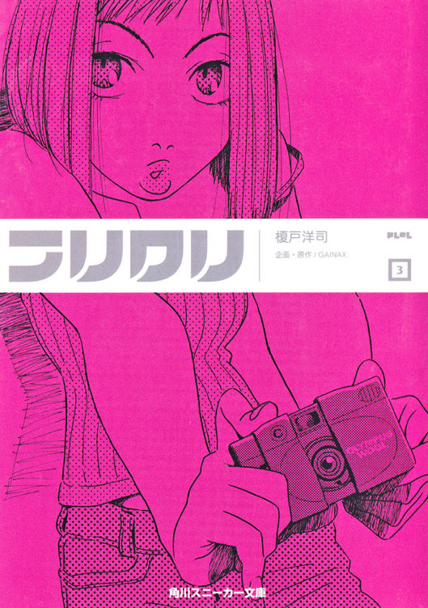

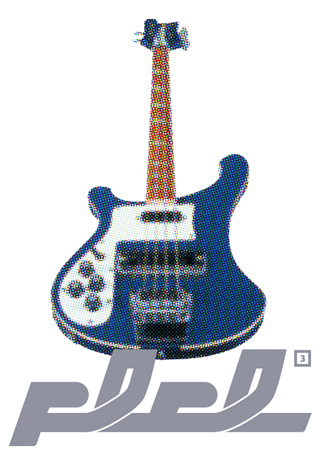
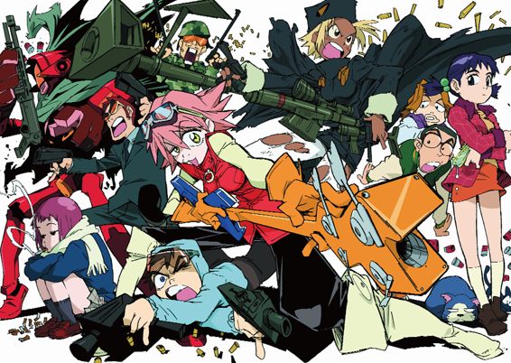
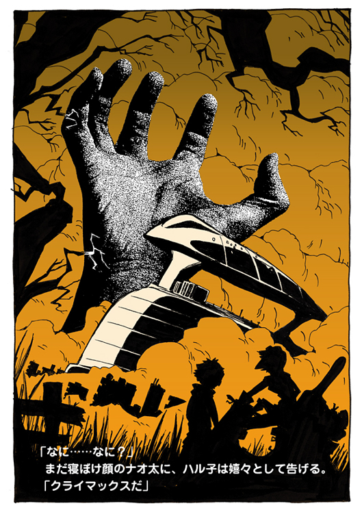
フリクリ
榎戸洋司
企画・原作/GAINAX
角川スニーカー文庫
本作品の全部または一部を無断で複製、転載、配信、送信したり、ホームページ上に転載することを禁止します。また、本作品の内容を無断で改変、改ざん等を行うことも禁止します。
本作品購入時にご承諾いただいた規約により、有償・無償にかかわらず本作品を第三者に譲渡することはできません。
本作品を示すサムネイルなどのイメージ画像は、再ダウンロード時に予告なく変更される場合があります。
本作品は縦書きでレイアウトされています。
また、ご覧になるリーディングシステムにより、表示の差が認められることがあります。
カバーイラスト／鶴巻和哉
口絵・本文イラスト／今石洋之
１
ハァ、ハァ、ハァ......。
ナオ太の激しく荒い息づかいが、晩秋の大気に白く散る。
傍らにはハル子が寄り添っていた。
その日、その午後、その時刻。疎瀬橋近くの河畔。小学六年生のナオ太と家政婦ハル子の二人は用心深く警戒しながら身を屈め、生い茂るススキの中にその身を隠していた。
辺りには危険が漲っている。ただならぬ状況。追いつめられた者の緊張感。
──やばい、狙われてる......。
ナオ太とハル子は今この瞬間スナイパーに狙われ、身動きがとれない状態にあった。
ほんの少し前までは死の射線が無数に交差し、乾いた銃声が無情に鳴りひびいていた。
そして、なんと二人もその手に凶々しく黒光りする銃を握っている。
ナオ太の手にはハンドガン・Ｍ11イングラム。そしてハル子の手にはさらに大きなウージー・サブマシンガン。
ここは戦場だった。
今、この疎瀬橋周辺は危険な戦いの最前線と化していた。
気候は涼しいが、銃把を握るナオ太の掌は汗ばんでいる。
川のせせらぎだけの静けさが、いっそ恐ろしい。
あせるな、怯えるなと、息を殺したままナオ太は自分に言い聞かせる。
ふとハル子がナオ太の肩にそっとふれ、前方の茂みの一画を鋭く見つめる。
〝あそこをごらん〟
示された方向に目を凝らしてみれば、コンクリの橋脚沿いの葦原に、確かに敵が潜んでいる。その気配を察知する。戦場に身を置いている緊張感が、ナオ太の感覚を通常よりも鋭敏にしているようだ。当然だろう。ここは油断した方が油断したその瞬間に敗者となる苛酷な冥界の淵なのだから。
ハル子はマシンガンの銃口をわずかに動かし、ナオ太に先に行けと命じる。
〝俺が囮かよ〟
不平をもらすナオ太に、ハル子は苛立った表情を見せる。
そして少年の背を蹴り飛ばす。
「死んでこい、二人の愛のために！」
「わわわわわ......」
ハル子に蹴飛ばされ、このような状況に陥ったわが身の不運をなげくナオ太。
──なんで、こんなめにあわなきゃなんないんだ......。
それは昨夜のことだった──。
昨日の夕食後。
鈴虫の鳴く裏庭でナオ太は一人バットの素振りをしていた。
そのバッティングフォームはさして進歩した様子もなかったが、ナオ太の表情はなにか先日までとは違う自信のようなものを感じさせた。余裕があった。
特別なシーズンの中でも、この頃のナオ太は特に増長していた。いい気になっていたということだ。
そして、そのナオ太の増長は自分のバッティングで街を救ったことが原因だった。
もちろんそれはあの危険な衛星爆弾落下のおり、ナオ太がその爆弾本体をギターで地球圏外まで弾き飛ばした一件のことである。
自分のバッティングで街を救った。
これはもう僕は、憧れの兄タスクと肩を並べてもいい凄い男なのではあるまいか。いや、あの兄にしたところで、落下してくる衛星爆弾をギターで弾き返すなんてことは不可能に違いない。自分はもう兄以上の実力なんだ！
たしかにナオ太が疎瀬市を救ったことは結果的には事実である。
けれど、そこにはハル子という超常現象女が携わっていたことを忘れてはならない。それを抜きに憧憬の対象である兄を凌駕したとナオ太が思うのは、どこまでも自分勝手な、自分だけの思い込みでしかなかった。
だがいい気になってる時には、なかなか自分がいい気になってることには気づかないものである。もちろん自信をもつことは悪いことではない。背伸びしなければ背はのびない。けれど本当の自信は、背伸びしてすぐに手に入るものではない。それには〝潔さ〟が必要だ。いつだって現実的な努力だけが、やるだけはやったという潔さと自信を与えてくれるのだから。
ただしナオ太がそれに気づくには、今しばらくの時間が必要だった。
「いい振りじゃ」
「じいちゃん......」
いつのまにかシゲクニが縁側からナオ太の素振りを眺めていた。
「ハル子さんもほめとったぞ、おまえは見込みがあると」
「......うん」
満更でもなさそうな表情の孫を見て、老人もうんうんとうなずいてみせる。
いや、シゲクニにしたところで、本気でナオ太のバッティングに感心してほめたわけではない。長男タスクの天才にくらべ、次男には野球に関して凡庸な才しかないことをマーシャンズのベテラン監督はもちろんわかっていた。
しかし、兄にかなわぬとはいえ、まだこの孫は十二歳であり、先の見込みまでも否定するにはいくぶん若すぎた。それにこうして素振りなどをしているところをみれば野球のことが嫌いなわけではなさそうだ。チームプレイには学ぶことが多い。下手なりにも練習を続けることはけして人生の無駄ではあるまい。とにかく野球に興味を持つのは大いに結構。多少おだててもその興味は育ててやらねば......それが、自分なりの草野球人生を歩んできたシゲクニの思いだった。
それは野球好きの老人とその孫の微笑ましい一場面といえる光景ではあった。
問題はその後だった。
気がすむまで素振りをしてから機嫌よく二階に上がっていくナオ太は、自分の部屋の中を見て思わず足をとめる。そこにハル子がいたのだ。
すでにナオ太の部屋は事実上ハル子との共有であり、彼女がいること自体はあたりまえなのだが、問題はその格好だった。
ナオ太は目のやり場に困ってうつむいた。風呂上がりだったらしくバスタオルを巻いただけで、ちょうど下着をつけているところだった。彼女のそうしたあられもない姿はこれまで共同生活の中でさんざん目にはしてきた。そして最初の頃は単にだらしない女として疎んじていたのだが──最近はその無防備な肢体を目にするとナオ太はつい〝それ以外の感情〟も抱いてしまうのだった。
「──あたしが彼に個人的な感情を？」
ハル子は下着に足を通しながら、また誰かと話していた。
「そういう事はないですよ。それで任務が遅れているわけではないです。Ｎ・Ｏのチャンネルは開いたままですし、好きとか嫌いとかそういう......あり、聞いてた？」
ハル子はようやくそこにナオ太がいることに気づいた。もちろん、自分が裸に近い格好であることなどはぜんぜん気にしていない。むしろこれみよがしにバスタオルをとり、今度はブラをつけはじめる。
ナオ太はその素肌から目をそらしつつも部屋を見回す。机の上にミユミユがいるだけ。やはり彼女一人しかいない。
けれど今日のナオ太は奇妙なひとりごとを不審に思うより、その内容の方に少なからず心が動いていた。
あたしが彼に個人的な感情を、とハル子は言った。
「いるんだ？」とナオ太は平静を装って訊く。
「なに？」
「好きなやつ」
あたしが彼に個人的な感情を。
彼。
その彼とはもしや自分のことではないのか？
なにしろハル子がこの家にいるのはそもそもナオ太のことが目的なのだ。
「どうだ？ 風呂あがりのハル子さんの匂いは？ ほれ、ほれほれ」
しかしハル子はナオ太の問いには答えず、意味ありげに微笑んでみせると、いきなりつけたばかりの下着の胸をナオ太につきだしたりした。子供っぽい女だ。
刺激的に体を押しつけてくるハル子に、ナオ太はわざとぞんざいに言う。
「さっさと服着ろよ」
「照れちゃって。もっと大人になんなさいよ」
「おまえが言うな」
そのまま背後から抱きついてくるハル子の腕を、羞恥のため力まかせにふりほどこうとし、けれどバランスをくずして転倒する。さらに足がからんで、仰向けに倒れるナオ太にハル子の湯上がりの肌がのしかかってきた。なんだか押し倒されてるようでもある。
いきなり、思わぬ近距離に接近するハル子の顔。その緑の目はなんだか秘めた欲望を見透かしているようで、ナオ太をあせらせる。
「ギター、教えたげようか？」
とハル子は言う。
ギター？
「なんで？」
「タッくんのギター、また使ってみてよ。カキーンって、このまえみたいなすごいやつ」
そう言いながらハル子が少し頰を染めてるように見えるのも、やはりナオ太の増長のせいだろうか？
──いや、これはやはりハル子は僕に惚れているのではあるまいか。
ホレテイルノデハアルマイカ。
思わず動悸が激しくなる。妙な心地になる。なんだかハル子の目や口や胸から強力な磁力のようなものが放射されてナオ太を取り囲んでいるような、そんな感じだ。さらに彼女の素肌が放つ匂いにナオ太の感覚がいよいよ鋭く刺激され始めたそのとき──
少年の後頭部からは、いきなりまた突起物が飛び出した。
そしてナオ太の頭はその〝角〟にぐいと押しあげられ、なんとハル子と唇を重ねてしまう。
マウス・ツウ・マウス。ハル子の唇の感触。
「いやん。タッくんたらあ......」
わざとらしくハル子が照れる。
「ちがう、角が......」
「あたしのファーストキスが......」
「ウソつけ、いつもしてるくせに」
「タッくんとは何度もキスぴょん」
「ちがうって、これ角のせいなんだよ」
生えてきた角を後頭部に押しもどそうとしつつも、懸命に弁明するナオ太。もはや角のことより、自分からキスをした、ということを既成事実にされてしまうことの方がナオ太にとっては重要問題であるらしかった。
「ナオ太君！」
いきなり、窓の外から父カモンが叫んだ。
「きみはいったい何をしてるのですか？」
「......それはこっちが訊きたいよ」
やれやれ、とナオ太は思った。どうやらカモンはベランダに隠れて部屋の中の様子をうかがっていたらしい。おそらくはハル子の着替えをずっとのぞいていたのだろう。まずいことに──あるいはさいわいに──ナオ太の後頭部の角はベランダ側からは見えなかったようだ。そのため父親の目には本当にナオ太がハル子の唇を奪ったように見えたに違いない。
カモンの表情は嫉妬に狂っていた。
「ナオ太君、ハル子さんをかけて、この父と男の勝負だ！」
「その勝負、のった」とハル子は答えた。
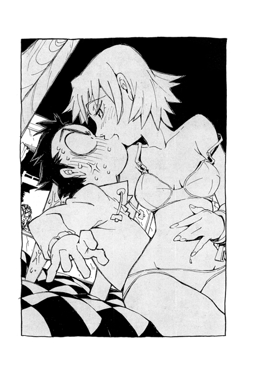
というくだらない理由で──
この日、この午後、この時刻、ナオ太は父カモンと戦うはめになった次第である。
そしてカモンの強引な提案により勝負はこうしてサバイバルゲームでつけることになったのだ。
サバイバルゲーム。
通常はサバゲーなどと略して呼ばれるこのゲームのことをはたしてみなさんは御存知だろうか？ これは80年代前半にアメリカからやってきた遊びで、エアガンというオモチャの銃を手に、参加者が二組に分かれて戦うという要するに戦争ごっこだ。
カモンはこのサバゲーが最初に日本に上陸したときからの熱心なマニアで、本日も全員がゴーグル、グローブ、ブーツとすべて本格的なイデタチでのぞんでいるのは彼のこだわりのためである。彼自身にいたってはその全身を隙なく迷彩服に包んでいる。
カモンはオモチャに対しては頑なな独自の美学をもっているようだった。
たとえば彼はエアガンは収集するが、モデルガンとそのコレクターのことは馬鹿にしていた。一応、知らない人のために簡単に説明しておくと、エアガンとモデルガンの違いは弾丸の発射機構の有無である。つまりエアガンにはＢＢ弾という小さなプラスチックの玉を撃つ機能が備わっているが、それに対しモデルガンは外観をできるかぎり現存する銃に似せて作られた模型であり、見た目はリアルだがその銃口は塞がれているのだ。
カモンに言わせるとエアガンは〝本物のオモチャ〟だが、モデルガンは〝偽物の銃〟であるそうだ。そしてオモチャは外観より機能、というのが彼のポリシーである。
馬鹿馬鹿しい、本物のオモチャだろうが偽物の銃だろうが、結局はオモチャじゃないか、とナオ太は思っていた。いい大人が熱中するものではない。
しかしそれでもカモンの提案に従い結局このサバゲーに参加したのは、大人を自認するナオ太にしてもこういう遊びがあんがい〝嫌いじゃない〟のかもしれない。
ところで、サバイバルゲームには特定のルールなどが定められているわけではない。その競技方法は参加者や地域により様々である。
本日カモンが採用したルールは、センターフラッグ戦というサバゲーの中でもわりと一般的なものだった。これは参加者が二組に分かれ、ゲームフィールドの中心に立てた旗を先に奪った方が勝ち、という単純なゲームである。
ナオ太とハル子が青組、対するカモンとカンチが赤組である。
この組分けにはカモンが異議を申し立てたが、あいにくハル子が譲らなかった。どうやらハル子の中では、ナオ太が彼女を奪われないよう守って戦う、というドラマチックな設定になっているらしい。
そんなわけでナオ太とハル子は青の、そしてカモンとカンチは赤のハチマキを、それぞれの頭に巻いて戦っていた。ただし、ナオ太はパーカーのフードでその頭を覆っている。きのう後頭部に生えてきた角はこれまでのものと異なり、押してもひっこまないためだ。
その角はいかなる因縁か、拳銃の撃鉄の形をしていた。
「おらおら早く行けよ」とハル子がさらにナオ太の背を蹴飛ばす。
「やめろよ」
外に押し出されたナオ太はあわてて茂みに身を隠そうとするが、ハル子はそれを邪魔して押し戻そうとする。
「なんで俺を盾にするんだ」
「あの口づけは遊びだったの？」
「............」
マウス・ツウ・マウス。ハル子の唇。
「どうしたナオ太君」とどこかでカモンの声がする。「男なら隠れてないで正々堂々と戦え！」
銃弾が飛んできて、ナオ太の体をきわどくかすめる。
ちなみにサバゲーにおいては相手の弾丸に当たったらその事を口頭で告げ、以後はゲーム終了時まで〝死体〟でいなければならないという苛酷な共通ルールがある。死体でいる、とは口をきくこともなく地面に転がっているということだ。恐るべき罰ゲームである。
「ほらほらどうした息子よ」と再びカモンの声がする。「そのようにただ怖けているだけではハル子さんはこの父に奪われるぞ」
「やだやだ、タッくん」
とわざとらしく甘えた声で、ハル子はナオ太にしがみつく。
「ああ、もうくっつくなって」
しかしそう言いながらも、どこかナオ太の表情は嬉しそうだ。
体が密着し、再びハル子の匂いに包まれる。自分に惚れてるハル子の匂い。
──しょうがない、守ってやるか。
「ここで待ってろよ」
「タッくん素敵」
ハンドガンを握り直すと、ナオ太は上半身を屈めた低姿勢で、用心深くカモンの声がした茂みへと足早に接近する。結構その気になっている。ナオ太には勝算があった。
声をあげて居場所を知らせたのがカモンの失敗である。奇襲をかければこちらの勝ちだ。体が小さいぶんナオ太はその奇襲に有利なはずだった。ただし、カンチがどこかで待ちぶせてるだろうから油断はできないが。
草むらの向こうに人影が見える。迷彩服。カモンだ。まだこちらには気づいていない。
──勝った！
ナオ太はその草むらの中に突入し、背中をとる。瞬時の隙も見せず、手にしたイングラムのトリガーをひく。四発、五発。的確にヒットする銃弾。しかし──
「！」
ナオ太が撃ったのは、なんと〝変わり身〟だった。丸太を迷彩服でくるんだダミーだ。
「甘い」と傍らに設置された小型スピーカーからカモンの声がする。「激甘だなナオ太君」
身の危険を感じたナオ太は慌てて逃げだしたが、ふいにその足場が消失する。落とし穴。カモンの仕掛けたトラップである。おそらく昨夜のうちに用意していたのだろう。
かろうじて穴の縁につかまり、懸命に這いあがる。
それは大人でも簡単には出られそうにない井戸のような深い穴だった。その底は陽が届かずに暗い。
──ここまでやるか......。
サバイバルゲームへのこだわり。ハル子への執着。おそらくその両方のためだろうが、たかが遊びに見上げた執念ではある。
ここぞとばかりに敵チームの銃弾が襲ってくる。
ナオ太は無我夢中で再び草むらの中に飛び込んだ。
そんなサバイバルゲームの一部始終を、橋の上に停車した車の窓から密かにスコープでのぞいている者がいた。うら若い女性だ。
女性は、やがてスコープの中にカンチの姿をとらえると、大仰な軍用トランシーバーをとりだし、そのスイッチを入れる。
「目標捕捉、確認しました」と報告する。「青です、青」
「赤じゃないんだな」と上官らしき男の声が確認する。
それはあのアマラオ管理官の声である。
車の中でスコープごしにカンチを見ている女性は、特殊入国管理局の局員だった。あの衛星爆弾落下時にはモニタールームでアマラオの傍らにいたオペレーターの一人だ。
幼く見える顔立ちだが年齢は二十代なかば。少し色黒でそばかすのある彼女の名はキツルバミという。
「遊んでるだけですよ、すごく間抜けそうです。あたし一人で十分です」
それだけを上官に告げると車を下り、トランクからなにやら物騒な装備をひっぱり出す。なんだか嬉しそうだ。実はキツルバミは自分から志願してこの前線で働くことになったのだった。これは彼女の希望の職務なのだ。
取り出したのは大仰な黒く長い砲身の脚架付き火器である。デグチャレフの対戦車ライフル。まさに戦争ごっこにはぴったりのアイテムだ。
ただし、彼女のはオモチャではなかった。
２
街の丘の上にそびえるＭＭは、いよいよその本性を現し、動きだそうとしていた。
カンチの逃亡やフラタニティの介入により邦家とＭＭ間の緊張はこれまでになく高まっていた。最近のＭＭはカンチをとらえるためなら条約を無視しても動き出す気配さえある。それはつまりこの惑星の治安が脅かされるということだ。どういうわけかＭＭにとってあのカンチの捕獲は、条約の遵守より重要な事項であるらしい。この一触即発の有事に際し、特殊入国管理局はあのカンチの身柄を必ずＭＭより先に捕獲しておく必要があった。本来ならＭＭの施設、つまり工場の常駐をただ監視していればいいだけの筈だったのに。
──やっかいな仕事になったな......。
情勢の不安を憂いながら、しかしこのとき、特殊入国管理局のアマラオ管理官は街の美容院にいた。その深刻な危惧とは裏腹に、なぜか白いカットクロスから首だけ出したおよそ威厳に乏しい格好で美容師のお姉さんに髪を梳かれている。そしてどこかテルテルボウズを連想させるそんな姿のまま通信器でキツルバミに次の指示を与えていた。
「......そうだ、しくじるとＭＭは本気で介入してくる。とにかく僕が行くまで待つんだ。あ、それからラハルには絶対に手を出すな、かえって面倒なことになる......仕事があるんでてっとり早くね。でもかっこよく頼むよ、こう、なんていうか大人の魅力って感じに、ほら、久しぶりに会う女性が、なんか頼もしいと思えてしまうような、ねえ......」
もちろん後半は部下に与えた命令ではなく、傍らにいる美容師のお姉さんに注文をつけただけである。
キツルバミは通信を切る。しかしその耳には上官の不可解な言葉が残っていた。
「──久しぶりに会う女性？」
その女性とはおそらくラハル、つまりあのハル子のことではないかと勘ぐる。
いよいよ作戦を開始するこのさしせまった状況下で、なぜわざわざアマラオが美容院などに行くのか訝っていたのだが、その理由があのハル子であるなら納得できた。なぜならあのアマラオという管理官は、彼女を必要以上に意識しているようだから。
噂によると以前彼は仕事であのハル子と行動を共にしたことがあるという。そしてなにか彼女の特別な能力を見せつけられ、以来恐れているらしい。
けれど恐れているその感情の底に、あのハル子に対する憧れとか好意のようなものが透けて見えるのは気のせいではあるまい。おそらくアマラオはいよいよあの女と接触することになりそうなので髪を整えに行ったのだ。
まあいい、とキツルバミは思う。どうでもいいことだ。
スコープをのぞきながら手慣れた様子で大型のトランシーバーを腰のベルトにマウントする。彼女は市販の携帯電話と同じ外観にカムフラージュされた支給品ではなく、わざわざこの大仰なロシアの軍事用シーバーを好んで使用していた。その腕に構えたデグチャレフの対戦車ライフルも、驚くべきことに組織から支給された装備ではなく（いかなるルートによるものか）個人的な趣味で入手したものである。
中央からあのアマラオが派遣され、特殊外来者対策チームがこの疎瀬に設置されたのは三ヵ月ほど前のことだ。そのおり、入局直後のキツルバミが殊勝にも行動隊員を志願した本当の理由は、実はこのミリタリー趣味によるものだった。
銃器。その鋼鉄の重量と洗練された機能美。人を殺害しうるクールな存在。それを使いこなす自分の非情さ。そう、彼女の仕事への情熱は愛国心や使命感などではなく、ただ趣味で集めたその軍事装備を実戦で使ってみたかっただけなのである。
現在の彼女の仕事はＭＭからの脱走ロボットの監視である。けれど、もちろん監視だけで終わるつもりなら対戦車ライフルなどをわざわざ個人的に持ち出したりはしない。
とにかく僕が行くまで待て、とさきほどアマラオは言った。
しかし、ロボットのボディカラーが青色以外に変化した場合は、臨機応変な対応をすることも以前に許可されている。一時的に色が変わったと言えばそれまでだ。この現場には自分しかいない。いいわけはなんとでもなる。
ターゲットのロボットがススキの中に身を隠しているのが見える。
キツルバミは悦に入った表情で愛するデグチャレフのスコープをのぞきながら、ゆっくりとそのトリガーに指をかけた。
敵チームの銃弾が執拗に攻撃してくる。
ナオ太はひとり反撃しながら、たまりかねて傍らでのんきに座っているハル子に言う。
「なにしてんだよ、おまえも手伝えよ、サバゲーだぞサバゲー」
「......あ、なんかヤバゲー」
ハル子はだらりと手にしたウージー・サブマシンガンの銃口をあらぬ方向に向けて引き金をひく。タタタン、と乾いた銃声が数発。
このとき彼女は橋の上でカンチを狙っているキツルバミの姿をめざとく見つけていたのだった。
その数発は橋の欄干、それもキツルバミの体からわずか数十センチの位置に命中した。ライフルのトリガーを引く寸前だったキツルバミは、たったいま自分がさりげなく、しかも恐ろしく正確な技倆の射撃で威嚇されたことを知る。
あわててスコープを射手に向けると、ハル子がこちらを見て不敵に微笑んでいた。
ハル子がいる場所は自分のいる橋から数十メートルは離れている。それはエアガンの有効射程距離を遥かに越えていた。ではハル子の持ってる銃は本物だったのだ。なによりコンクリの欄干に命中した弾丸はすべてめりこんでいる。キツルバミはぞっとする。しかし銃が本物であること以上に恐ろしいのは、やはりハル子のその精密射撃の腕前である。たしかに侮りがたい相手だ。
だがキツルバミは欄干にめりこんだ見慣れぬ弾体にそっと指で触れてみて、さらなる恐怖と混乱に陥った。
──？
それはＢＢ弾だった。コンクリでできた欄干にめりこんでいるのは、なんとエアガン用の小さな丸いただのプラスチックの玉なのである。
どういうことだろう？
そして欄干の外側に身をのりだしていたキツルバミは、その理解不能なできごとに呆然とするあまり、自分が片手で重い対戦車ライフルを支えていることを一瞬わすれてしまった。気づいたときには遅かった。ぐらりと世界が傾いだ。
「えっ......」
哀れバランスを崩したキツルバミは、その愛するライフルと共に川面に落下していった。
すると、さらに「ぐあ」と意味不明な男の悲鳴があたりにひびく。
キツルバミが落ちた場所、丈高く群生する葦の中には、なんたる偶然か、運悪くカモンが潜んでいたのだ。キツルバミの体は、まさにそのカモンの真上に落下したのである。
激突した二人は転倒し、そのまま河川中央の深い急流にのまれて押し流されていく。
しかしサバイバル・ゲーマーとしてのカモンの闘志はそれでも不屈だった。その戦意はあるいはキツルバミ以上かもしれない。なにしろいきなりの事故に見舞われ、流され溺れながらも、執念で友軍に最後の言葉を叫んでいたのだから。
「テレビ君、あとはまかせたよお......」
カンチはチームメートの言葉を耳にすると、潜伏していたススキの中から飛び出し、いっきにナオ太に接近戦を挑んだ。
実はカンチには射撃用照準レーザー機能も備わっていたのだが、誰に命じられるでもなくその能力は封印していた。今日のサバゲーにおいてそんなものは無粋だと判断したらしい。どこまでも物事の道理をわきまえたロボットである。
「しまった」とナオ太はあわてる。敵に背後をとられたのだ。
だが思い切って勝負にでたカンチのエアガンは、残念なことに、カチリ、とトリガーを引く音が虚しく響いただけだ。さきほどからフルオートで撃ちまくっていたので、手にした銃は弾切れになっていたのだ。
こうなってみると勝負は圧倒的にナオ太が有利である。
「へへーんだ、俺の勝ち」
ナオ太は思わず勝ち誇って銃口をカンチに向ける。
まずい、と気づいたロボットは、あわててその場を逃げ出した。
センターフラッグ戦なのだからさっさと中央に立つ旗を奪ってしまえば決着はつくのだが、ナオ太は銃による勝敗にこだわり、そのままカンチを追いかけた。どうやらこの戦況に狩りの面白さを見出したようだ。
調子にのって川原を追うナオ太。しかし逃げるカンチのあとを追ってボート小屋の角を曲がると──
「わわわ......」
ナオ太は狼狽する。
丸腰だとみくびっていたカンチが新しいエアガンを手に待ちぶせていたからだ。
どうやら周到なカモンの作戦により、この小屋のわきに予備の武器を事前配備していたらしい。再び形勢逆転である。
至近距離で弾の装塡されたエアガンに狙われ、今度こそナオ太は絶体絶命だった。
「タンマタンマ、いったんタンマ」としかしナオ太は叫ぶ。「タンマは三回までアリね」
「............」
いきなり聞かされたこの新ルールに対し、カンチは不満と抗議を無言でアピールする。
それはないだろ、とその沈黙はナオ太を責めていた。
「なんだよその目は」とナオ太は悪びれた色もなくひらきなおる。「いま決まったの」
川原の砂利道を走ってきた三輪の軽トラックが小屋の近くで停まり、クラクションを鳴らした。
おーいナオ太、と助手席で手を振っているのはクラスメートのガクである。
そして、その隣の運転席には、なんとやはり級友のマサシが座っていた。
──なんだ？
ナオ太はクールを装いつつも内心ではびっくりしていた。
ではこの車はマサシが運転していたというのか？
「店の手伝い」とマサシが平然とした顔で言う。
「配達。バイトだよ」とガクもこともなげにつけくわえる。
──うそだろ......。
トラックの車体には『清酒・マサムネ酒店』の文字がある。マサシが酒屋の息子であることはもちろんナオ太も知っていた。店の配達を手伝っていることも聞いたことはある。だが、まさかトラックのハンドルを握っているとは......。
「大丈夫、バレないって。いつも川沿いの道しか走ってないしさ」
さりげないマサシの説明は、けれどさらにナオ太の驚きを大きくした。
──いつも？......いつも、やってんの？
「かっこいいね、それ」
いきなり女の子の声がする。
見れば、トラックの荷台になにげなく座ってアイスキャンディをなめているのはニナモリ・エリだった。
──なにしてんだよおまえまで！
学級委員長の素行としてはかなり問題があるぞ。
しかしニナモリは無邪気に尋ねる。
「オモチャでしょ。タマでるの？」
かっこいい、とさきほどニナモリが言ったのは、ナオ太が手にしているそのエアガンのことである。ナオ太はバツが悪くて、あわてて手にした銃を隠そうとする。
なんてことだ、とあせる。
車の運転──しかも配達のバイト、などという大人っぽいことをしている級友たちは、もしかしたらナンダバ・ナオ太が、戦争ごっこなどに興じてたと思っているのではないだろうか？（いや、実際に興じていたのだが......）
「違うんだよ、こいつがさ、いや、だから......あ、そうだカンチ、あれ買ってこいよ、ジュース」
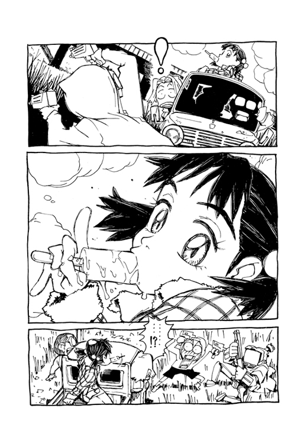
ナオ太はオモチャの銃で遊んでいたことをなんとかごまかそうと、傍らにいるカンチにその責任を押しつけようとする。けれど混乱した頭ではそれもうまくいかず、結局照れ隠しに用事を言いつけるのが精一杯だった。
仕事に勤勉な家事ロボットは、ナオ太が苦しまぎれに口にしたその思いつきの用事のため、ふわりと上昇する。
カンチにはこのように重力制御による飛行機能もあるのだが、それもまたサバゲーでは自ら封じていたのだ。だが仕事であればすぐにモードを切り替える有能なロボットである。
もちろんマサシたちはナオ太が何をしていたか知っていた。そんなの一目見ればわかる。けれどマサシ、ガク、ニナモリの誰ひとりとして、べつにそのことでナオ太のことを馬鹿にしているわけではない。へえ、サバゲーか、面白そうだな、とか思ったくらいだ。ナオ太のあせりと羞恥は、どこまでもナオ太ひとりの妙なプライドによる思い込みでしかなかった。自分だけが誰よりも大人であり、クールであるという思い込み。
むしろ、マサシたちは命令をうけて飛び立つカンチに驚いていた。
そう、ナオ太はこの便利なロボットとの共同生活にすっかり慣れていたので、このように買い物を命じることもすでに日常でしかなかったが、ロボットを意のままに操るのは車を運転するよりよほど凄いことなのではあるまいか？
「ナオ太さ、聞いてる？」
飛び去るロボットを見上げながら、ガクが、なんだかガクにしては慎重な口調で訊く。
「なに？」
「噂」
「噂？ なんの？」
すると、ガクは隣のマサシと顔を見合わせる。それは、どこまで尋ねていいものか目で相談しているようだった。ニナモリも黙ってアイスキャンディをなめつつ、横目にナオ太を見ている。
ナオ太はなにか不穏な空気を感じた。それは自分だけが知らない、そして自分に関わることが隠されているあの居心地の悪い空気だ。
「なんだよ？ どんな噂？」
「あのさ、このまえ、衛星の事故があったろ」とガクは言う。「あのとき、街を救ったのは本当はナオ太じゃないかって」
「............」
「ほら、あの学校での騒ぎのときもナオ太とロボットが活躍したっていうじゃん。あのロボットはナオ太が動かしてるらしいしさ」
学校での騒ぎのとき。それは文化祭の劇の練習のとき、ニナモリの頭からロボットが出現して暴れた一件のことである。あの暴走ロボットはカンチが破壊したらしいと噂になっていることはナオ太もうすうす知っていた。
そして、その噂が発展して、先日の衛星落下の危機もどうやらカンチを操ってるナオ太が解決したのではと憶測されているようだ。
ふむ。
べつにまちがいではないな、とナオ太は思う。
正確に言えば衛星落下はカンチを操って解決したのではなく、自分の手にしたギターでじかに爆弾を弾き返したのであり、実はみんなが思っているよりナオ太のヒーロー性はさらに高いのだ。けれどまあカンチを操っているのも事実だ。これまでにナオ太は二度、あのロボットと一体となり暴走するロボットを撃破している。噂どおりにロボットを操り、街を守っているのだ。
ただ、それらの事件は人には口外できない、秘めた自慢ではあった。衛星の件にしても、ギターで爆弾を打ち返したなんて誰にも信用されないであろうことくらいはナオ太もわきまえていたからだ。
だが、すでにその事実が噂となっているなら話は別だろう。
「なんだ、そこまで知ってたんだ......」
「やっぱりナオ太が街を守ったってこと？」とマサシが確認する。
「ホントにホントなのか？」ガクはかなり興奮している。「それ、すごいじゃん」
まあね、と気を良くするナオ太は得意気に微笑む。
まあね、実はすごいんだよ、僕は。
車の運転を見せつけられ、たった今まで感じていた焦燥が、いっきに余裕に転じていた。
やっぱりすごいじゃん、僕は。
しかしそのとき──
おらおらおら、といきなり背後に現れたハル子が、得意顔のナオ太に抱きつき、その股間を無造作につかむ。
「タッくんみっけ」
「こら、やめろって、さわるなよ」
「気持ちいいか？」
「いいわけないだろ！」
「ほら、ゲームはあたしたちの勝ち」
ハル子はすでにサバゲーのフラッグを手にしていた。
「これであたしは晴れてタッくんのものよ」
「だからさわるなって」
いきなり目の前で展開する未成年者への淫行行為に、マサシとガクはただ茫然と見ているしかなかった。やはりこのナオ太の家の家政婦はただものではないと再認識するが、ハイテンションではしゃぐその女が、かつて街中の小学生たちを震えあがらせたあの光速ベスパであることまではさすがに気づかない。
「あれ？」
ふとニナモリは土手の上に人影をみつける。寂しそうな風情でこちらを、というか戯れているナオ太とハル子を見ている女子高生がいる。
サメジマ・マミ美だ。
ハル子もマミ美に気づき、屈託なく手にした旗を振る。
「おーい、サメジー」
すると、土手の上のマミ美は呼ばれて少し困ったような顔になる。
気付かれないよう立ち去るつもりだったのに、声をかけられ、逃げ場をなくしたらしい。
ナオ太もマミ美を見あげる。
しかしハル子に抱きつかれたままの格好では、ナオ太の方もきまりが悪そうだった。
マミ美とナオ太は一瞬だけ視線を交わし、そして互いに目を逸らした。
３
あの三人は今ごろどんな修羅場を展開しているのだろう、とニナモリは思う。
ナオ太たちと別れ、マサムネ酒店の軽トラックは再び河川敷を走っていた。じゃあな、またあした学校でな。配達が残ってるから俺たちはこれで。本当はもうたいした仕事もないのだが、マサシが気をきかせてさっさと退散してきたのだ。
それはまあ賢明な判断ではあった。マミ美が登場してなにやらあの場は不穏な空気となっていたから。
けれど以前と違い、ニナモリのナオ太に対する思いも変化しているようだ。さきほどのように傍らでハル子とナオ太がハレンチこの上ない方法でふざけあっていても、すでに心動かされることもなかった。
カラバ侯爵はもうやめだ。
あの文化祭の劇のとき、コンタクトレンズの上にわざわざ伊達メガネをかけてみせたのは、実は〝子供のふり〟をしたのだった。コンタクトで外面を保ってきた自分は、大人のふりをしてきた自分。メガネをかけた顔こそが素顔の子供の自分。ニナモリは自分の中でそう整理してみたのだ。
そして大人のふりをするのが子供なら、成長した自分はその証に子供のふりをこそしてやろうと、あの劇のときは伊達メガネをかけた。
けれど、劇が終わってしばらくしてからさらに気づいた。実は〝子供のふり〟なんてわざわざしなくていい、ということに。
だって自分はまだ本当に子供なんだから。
泣きたいときは泣けばいいし、こうしてクラスの男の子とこっそりトラックに乗るのも楽しいし、それにほら、ソーダ味のアイスキャンディはこんなに美味しい。
ふとなめていたアイスキャンディの棒を見ると、そこに印された文字があるのに気づく。
ニナモリは荷台から手をのばし、それを運転席のマサシに見せる。どうやらそのアイスキャンディはマサムネ酒店で購ったものらしい。
「ほらこれ。［当たり］だって」
「ほんとだ......あ、ちょっと待ってて」
マサシは運転席に置いてあった箱の中から小さな紙袋をとりだし、ニナモリに差し出す。
「なに？」
「景品。気にいるといいけど」
ニナモリが紙袋から中身を取り出してみると、それは水鉄砲だった。いかにもオモチャっぽい、緑色の半透明プラスチックでできた水鉄砲。
「きれい......」
思わず微笑むと、その水鉄砲を陽にかざしてみる。有彩色の影が、微笑む少女の表情を鮮やかに彩った。
片方の目で、その手に入ったばかりの宝物ごしに世界を見る。緑一色の世界が少女の視界にひろがる。緑の空。緑の雲。緑の川。プラスチックの向こうは、まるで別の惑星のように見える。
ニナモリはいま別の銀河にある惑星みどりにいるのだ。
「あの女子高生さ」とマサシが運転席で言う。「あれはナオ太の兄貴の彼女なんだ」
「............」
それはニナモリにとって初めて耳にする情報だった。ではサメジマ・マミ美はアメリカに野球留学しているというお兄さんの彼女だったのか。どうやらマサシだけでなくガクもそのことを知っていたようだ。
「でもさでもさ」とガク。「あのヨメ、やっぱナオ太が本命なのかな。あのチューのお姉さんもナオ太のこと好きみたいだしさ、なんかナオ太、モテモテじゃん」
でも本当にそうだとしても、とニナモリは思う。小学生の男の子相手に本気で特別な感情を抱く女子高生や成人女性って、ちょっとあぶないんじゃないかな。
水鉄砲を秋空に向けると太陽を狙い引き金をひく。
──いや、あのハル子にしろマミ美にしろ、確かにあぶないやつではあるな。
ナオ太は缶ジュースを飲んでいた。さきほどカンチが買ってきたものだ。だがそのカンチはお使いを終えるとすぐにどこかへ去ってしまった。そしておせっかいにもマミ美に声をかけ、この〝修羅場〟をつくった当人であるハル子もまた、ふいとどこかへ消えてしまった。というわけで、さきほどまでサバゲーの戦場だった疎瀬橋近くの川原に、ナオ太はマミ美と二人きりでいた。いつものように堤に座り込むナオ太。マミ美はナオ太のエアガンを手にし、また脈絡のないことを口走りながら銃を構えて遊んでいる。どうやらテレビかなんかで見たガンマンのまねらしい。
「......ここに留まる機体がディフェンス、ＡＴフィールドを中和しつつ、奴の溶解液からオフェンスを守るっス。バックアップは下降。落としたライフルを回収し、オフェンスに渡すっス。そしてオフェンスはライフルの一斉射にて目標を破壊......これっスよ！」
「あぶないから銃口こっちにむけんなよ」
「つぶつぶっスか」
ナオ太はドキリとする。マミ美はナオ太が手にした缶ジュースを見て言ったのだ。それはつぶつぶオレンジなのである。
「最近はつぶつぶが好きなんスか？」
「いや、あんまりすっぱいのとかは、苦手だからさ」
「好きっスよね、ハルさん、つぶつぶ」
「............」
言われてみて初めて気づいたが、自分は以前、いつも缶コーヒーばかりを飲んでいた。果実の混じったこのいわゆるつぶつぶジュースを好んで飲むようになったのはごく最近のことである。それはハル子の嗜好品だった。どうやら知らない間に清涼飲料水までハル子の影響を受けていたようだ。
「見てたっス」とマミ美は言う。「見てたっスよ」
「気にしてるのかよ、あんなの......」
修羅場とは痴情のもつれる現場のことに他ならない。
ハル子とふざけあっているところをマミ美に目撃されたことは、確かにナオ太を少しうしろめたい気分にさせていた。うかつだった。いつから見てたのだろう。もしや自分はかなりはしゃいでいたんじゃないだろうか？
「いや、俺はハル子のことなんてなんとも思ってないの」と、ナオ太は弁解めいたことを口にする。「さっきのはハル子が調子にのって勝手にグリグリしてきたけど、あんなのはいつものことで、あ、いや、だからいつものことって言っても、いつもあんなことしてるわけじゃないけど......」
なんだか淋しそうな目でそんなナオ太を見るマミ美。
捨てられた猫のように不安そうな顔。
しかし──
それはナオ太にとって妙にくすぐったい、というか、嬉しいことではあった。なぜなら、それはひとつの確たる事実を明らかにするからだ。つぶつぶジュースのことにしても、それをマミ美がめざとくみつけて気にしていたことの意味は明白だ。
マミ美が僕に嫉妬している。
マミミガシットシテイル！
色男はつらいな、とナオ太は心の中でつぶやいていた。
「すごいっスねえ」と、しかもマミ美は言う。「カンチ様を運転したり、恐怖の大ちゃん打ち返して街を守ったり......」
「え？」
〝恐怖の大ちゃん打ち返して街を守ったり〟
それはまぎれもなく、あの衛星爆弾を打ち返したことを言っているらしい。
──じゃあマミ美も知ってるのか？
そう、あのとき傍らにいたカンチのフェイスモニターに、どういうわけかアマラオたちの使うスパイカメラの映像が中継されていたので、マミ美はその一部始終を見ていたのだ。
「最近のタッくんは、すごいっス」
「いや、たいしたことないよ......」
マサシたちも知ってたようだし、あの衛星爆弾を打ち返した一件はあんがい街中で噂になっているのかもしれない、とナオ太は思った。無我夢中だったから周囲のことまで目に入らなかったが、あのとき現場には目撃者がいたのかもしれない。
──だがそれならそれでいい、僕の活躍が広まるだけのことだ。
われしらず得意満面になっていくナオ太の背後にマミ美がそっと近づく。いつものようにまた抱きしめられるのだろう。
いつまでも続けていてはいけないと知りながら、いまだにやめられない〝遊び〟。兄タスクがアメリカに行ってから、ナオ太はマミ美ともう何度くらい、この堤でこうして遊んだだろう。そしてあとどのくらい、こんなことをつづけるのだろう。
「いて！」
だが甘い予想に反し、ナオ太の後頭部にはいきなり痛みが走る。マミ美が手にしたエアガンを撃ったのだ。
「......なにすんだよ」
ＢＢ弾とはいえ、ほとんど銃口が接するこの至近距離で撃たれるとかなり効く。もっともナオ太の頭は着ているパーカーのフードが覆っていたので直撃ではなかった。その〝角隠し〟がとれないよう、ナオ太はあわてておさえる。
「今日もそのフードの下はフリクリっスか？」とマミ美は言う。「ホント、タッくんは凄すぎるっスよ。フリフリしちゃったり、つぶつぶしちゃったり、グリグリしちゃったり。そんなタッくんになっちゃったのはいつからっスかねえ。やっぱ、ハルさんが来てからっスかねえ」
「おまえ、それって......」
まいったな、とナオ太は思う。やっぱりだ。やっぱりマミ美は嫉妬している。そうか、この後頭部の痛みは、もてる男の証ってやつか。
ふとマミ美の唇が目につく。いまだにそのめくれた形のいい唇の味をナオ太は知らない。なぜならマミ美はそれだけはかたくなに拒み、許さなかったから。
けれどその遠いはずの唇は、今はすぐ近くにある。今日こそ、これは僕のものだ。
ナオ太はマミ美の手を握ると、川原からつれだそうと立ち上がった。
「来いよ！」
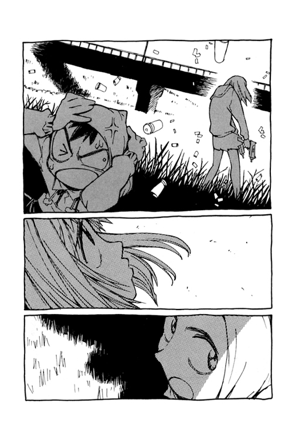
「来るな！」
ようやく浅瀬に流れつき立ち上がったキツルバミは、内ポケットの防水ホルダーから小型拳銃を取り出し構えた。
その銃口の先、川岸に佇んでいるのは他でもないターゲットのロボット、カンチである。
カンチは彫像のようにじっと動かず、そしてキツルバミを見つめている。
──こわい......。
狙撃以外の戦闘を想定していなかったキツルバミは、いきなり近距離で遭遇したターゲットの脅威に耐え切れず、思わず手にした拳銃のトリガーを引く。なにしろ実戦経験が皆無なのだ。だが全弾が命中しても軽い金属音が響いただけ。ロボットのその青いボディは銃弾など歯牙にもかけぬ耐性を備えていた。
ターゲットであるそのロボットのデータファイルはもちろんキツルバミも目を通していた。拳銃くらいで倒せないことは承知しており、だからこそ趣味とはいえ対戦車ライフルまで用意してきたのだ。だがその必殺のライフルは川床のどこかに紛失し、そしてうかつにも無力な拳銃で攻撃をしかけ、敵だと認識させてしまった。
この最悪の状況は、しかし当然の結果でもあった。彼女は自分を一人前の軍人とみなしていたが、正式な訓練をつんだわけではない。ただ〝軍人ごっこ〟をしているにすぎない。
パニックに陥りトリガーを引きつづけるが、それもすぐに弾切れになる。
無表情なフェイスモニターで対峙していたロボットが、いよいよ川の中に立つキツルバミに一歩を近づく。
「ひい！」
恐怖が彼女の全身を貫く。先走ったことへの後悔。間近に迫る強い敵。丸腰で怯えるしかない自分。たった今からどのような報復をうけるのだろう。
──これから仕返しされる、やられちゃうんだ......。
もはや逃げ去ることもかなわず、両足がすくむ。すでに全身ずぶ濡れで目立たないが、その股間には生暖かいものがひろがった。
拳銃が指先から落ちて川の中に消える。
キツルバミは観念して目を閉じた。
「......キツルバミ君、キツルバミ君、おいどうした！」
そのころ、アマラオ管理官はいまだ街の美容院にいた。洗髪のためリクライニングしたシートに身を横たえ、その顔はガーゼで隠されている。
「返事をしろ、おい、キツルバミ君......あちちち！」
いきなり悲鳴をあげる。どうやら頭にかけられたシャワーが熱湯だったようだ。
だが美容師はその不手際を詫びることもなく尋ねる。
「このあとのヘアカラーはどうなさいますか？ いつも通りクリ色ですか？ それともフリクリ色？」
「............」
──まさか！
アマラオはその美容師の声に聞き覚えがあることに気付いた。
あわてて顔を覆うガーゼを振り払えば、やはりそこに立っていたのはハル子だ。
「いつのまに！」
「きっちりカットで女にモテモテか？」
「なんでここにいるんだ」
「てめえこそ、下のもんになにやらせてんだ？」
アマラオはあわてて起き上がると、すばやく拳銃を構える。そして反射的にもう片方の手の指で、自分のひたいに眉があることを確認した。
「......え？」
自分の体がやさしく抱き上げられてるのに気付き、キツルバミはその目をあけた。
ロボットは大きな手で彼女の体を抱き上げ、冷たい川の中から救いだすと、そっと静かに川岸に立たせてくれたのだ。
そして驚かせてごめんねというふうに、彼女の頭をやさしくなでた。
「............」
キツルバミの心臓の鼓動が早くなる。だがそれはもはや恐怖のためではない。胸が高鳴り、体中の血が一瞬にしてあたたかくなる感じ。
その方面にはオクテなキツルバミも、実はこれまで三人の男性とつきあった経験があった。一人目は大学の時でゼミの助教授。あとの二人は上司との職場恋愛である。そのどれもが相手に妻子のいる不倫であり、そのどれもがなんとなく言い寄られてつきあいはじめたのだった。そして、結局はどれも彼女の方から別れを告げていた。いつも都合よく遊ばれていただけとも言えるが、別れを告げた本当の理由はどの男もなにかものたりなかったからだ。そしてそのものたりなかったものがなにか、彼女はいま初めてわかったような気がした。
──やさしい......。
不思議なオーラを感じた。自分をやさしく包みこんでくれる暖かな波動。
黙して佇むロボットのボディにそっと指を触れてみる。
それはキツルバミの初恋だった。
「あれは危険すぎるロボットだ」
銃でハル子を狙ったまま、アマラオはゆっくりと席から立ち上がる。どうやら猛獣を刺激しないようこわごわと檻の中を移動しているらしい。
キツルバミの予想通り、アマラオがこの美容院に来たのはハル子と会うための準備だった。美容師に言った久しぶりに会う女性とは、やはりハル子のことだったのだ。だがそのハル子はアマラオにとって強く異性を意識する相手でありながら、同時に恐怖の存在でもあった。
「気付いてるんだろ」なるべく理性的な口調でアマラオは言う。「赤くなったあのロボットはアトムスクと無関係じゃない。早く処理しなければＭＭが動きだす。やつらはこの星ごとつぶす気なんだぞ」
「それがなに？」
「............」
しかし、ハル子のぞんざいな一言を耳にしただけで彼の動物としての本能は恐怖に震え、衝動的に外に逃げ出す。だめだ、やはり彼女と二人きりでいるのは耐えられない。
美容院の外に待機していたアマラオの部下は上官が一目散に逃げ出してきたのを見て、とっさに銃を構える。
待て、とアマラオは叫んだが、部下の男は店の入口に姿を見せたハル子にうかつにも発砲してしまった。どうもアマラオの部下たちはそろって実戦経験に乏しいようだ。
いきなり撃たれたハル子は、しかし不敵な笑みを浮かべたまま、その手にした金属片のようなものをさっと振りおろした。
アマラオとその部下は見た。目の当たりに見せつけられた。
その銃弾がいともたやすく地面に叩きつけられ、きれいに二つに割れるのを。
肉食獣の残酷な笑みをたたえるハル子。
ハル子が手にした金属片は美容院のトレイに置いてあったただのカミソリである。
アマラオはあらためてこの女の恐ろしさを思い知った。
「......なんてやつだ」
「たいしたやつじゃないよ」
とハル子を評しながら、ナオ太はマミ美の手をひいてすでに駅前近くまできていた。
「あんなの。ぜんぜんおバカって感じじゃん」
「いたいっス......だから、なんでそんなにひっぱるんスか」
川原からずっと強く手を握ったままのナオ太に、マミ美は十数回目の文句を言う。しかしナオ太はマミ美の抗議をぜんぜんとりあわない。実際、いまのナオ太はマミ美の言葉などその耳には届いていないようだった。
「ほんと、あいつがきてからロクなことがないよ。ほら、俺たち二人きりで会うことも少なくなったし。昔の方が良かったよ」
──今日こそマミ美が僕のものになる！
あんなに好きだった、いつも想っていた彼女が自分のものになる。ナオ太は興奮していた。
思えばほんの三ヵ月ほど前、ナオ太はこのマミ美との関係に決着をつけようとしていた。兄の代用品である自分の立場が嫌で、マミ美に真実を告げようとしたのだ。
マミ美の本命の相手、ナオ太の兄ナンダバ・タスクは、すでにアメリカでステディな彼女をつくっている。隠していたその事実を、あきらかにするつもりだった。
その結果、マミ美と自分の関係がどうなるかはナオ太にも予想できなかった。今までのように一緒に過ごすことはもうなくなるかもしれないとは思った。彼女が自分になんの執着もないことはわかっていた。けれど、たとえそうでも代用品のままでいるのはよくないとナオ太は自分にいいきかせたのだ。それは優柔不断なためにずるずるとマミ美と遊び、行き詰まっていたナオ太の最後の選択だった。
だが状況が変わった。ハルハラ・ハル子が現れた。
彼女が来て巻き起こった予想もしない騒動と混乱の中で、マミ美とのことは再び曖昧なまま保留になり、そしてその間にいろんなことが少しずつ変わったのだ。たぶん。
なによりまず自分自身が変わった、とナオ太は感じていた。そう、自分は強くなった。以前とは違う。たくましく、男らしくなった。街を救ったりもした。そして成長して世界がひらけた。いまやマミ美は、なんと自分とハル子の関係に嫉妬したりしてる。自分に惚れている。いまなら、いまの自分なら、マミ美との関係も一歩さきに進めることができるにちがいない。
「ここでいい？」
やがてナオ太が立ち止まったのは、小さな喫茶店の前である。もちろん小学生が保護者の同伴なく喫茶店に入ることは許されない。けれど、だからこそナオ太は喫茶店を選んだのだった。学校の規則を破ることと閉塞した現状を打破することを同一視していた。今までやらなかったこと、やれなかったことをやれば、新しい自分になれるに違いない。内心ではドキドキしながらも、できるかぎりのクールさを装ってその喫茶店のドアに手をかける。マミ美は驚く。
「え、入るんスか？」
「......嫌なのかよ」
「どうしてサ店なんスか？」
「兄ちゃんとは入ったんだろ」
喫茶店。それは現在のナオ太に思いつける唯一の、本物の恋人同士が本物の恋のひとときを過ごす場所である。ここで二人一緒の時間を過ごせば、それは本物の恋人同士であるとナオ太が納得できる場所なのだ。
そしてこのナオ太の考えは滑稽なようで、実はそれほど的外れでもなかった。あんがい的確な行動と言えた。
なぜなら、マミ美にとっても場所の違いは関係性の違いであったからだ。
川原で、二人はいつも恋人もどきの〝遊び〟にふけっていた。しかしあの川原にいるかぎり、二人はずっと〝川原の関係〟でしかなかった。あの川原は〝マミ美が代用品と過ごす場所〟であることにナオ太はいつしか気づいていた。それが、ナオ太がなかば本能的にマミ美を喫茶店につれてきた理由である。
──今こそ僕たちは〝川原の関係〟から〝喫茶店の関係〟になるんだ。
しかし、マミ美はそんなナオ太の手を今度こそ強く振り払う。そして怒った口調で言う。
「どうしてっスか」
「なにが？」
「なんでこういうことするっスか」
「だって、おまえは俺のこと──」
好きなんだろ、という一言を、けれどふとナオ太は気後れして口にできなくなる。
なんだかマミ美の目はマジに怒っている。喫茶店につれてきたことを本当に怒っている。というか嫌がっている──ように見える。
さすがにナオ太は不安になる。
違うのか？ マミ美は僕を好きなんじゃないのか？ だって、だからハル子に嫉妬したんだろ？
「ハルさんのせいでしょ？」とマミ美が言う。
なんだ、とその一言でナオ太は少し自信を取り戻す。ほら、やっぱりマミ美はハル子に嫉妬してる。やっぱり僕のことが好きなんだ。
そうか、好きだからこそ不安になってすねてるんだ。
「心配するなよ」とナオ太は言う。「あんなやつ関係ないよ」
「ハルさんのことどれくらい好き？」
「ちがうよ、俺はおまえのことを......」
「タッくん、ハルさんのこと好きなんでしょ」
「............」
──なにを言ってるんだ？
マミ美は悲しそうな目でじっとナオ太を見る。その瞳の奥にはなにかナオ太にはうかがいしれない想いがひそんでいるようだ。そしてその淋しそうな目の意味は、たしかに増長している今のナオ太には理解できていなかった。
川原でナオ太とハル子がはしゃいでいたのを切なそうに見ていたマミ美。しかしそれはナオ太が考えるような嫉妬心ではなかった。ナオ太は誤解していた。
あの衛星爆弾を打ち返すのを見て、マミ美がナオ太にある種の男らしさを認めたのは事実だ。けれど、マミ美はそんな男らしくなったナオ太を見直して惚れたわけではなかった。
むしろその逆だった。
男らしいナオ太じゃダメなのだ。
マミ美にとって必要なのはあくまでも代用品の〝タッくん〟なのである。
ナオ太は自分が代用品であることが面白くなかったが、逆にマミ美は代用品しか必要としていなかったのだ。男らしいナオ太なんていらない。だってマミ美にとって相手が男らしくなるということは、自分を捨てるかもしれない男になるということだから。
もちろんそんなのはマミ美の勝手な理屈である。それをナオ太に理解しろという方が無理だ。
マミ美はなにも言わずにナオ太を見下ろしている。
しかし今のナオ太にはそのマミ美のつややかな唇しか見えていなかった。
いつだってすれちがう少年と少女。
ナオ太は背伸びをする。
精一杯の背伸びをして強引にマミ美の肩をつかみ、キスしようとする。
だがやはりマミ美は顔を背けて、それを拒んだ。
「なんでだよ」とナオ太は思わずなじる。「おまえも俺を好きなんだろ！」
「............」
淋しそうなマミ美の目。
その瞬間──
カチリ。
ナオ太のかぶるフードの中で後頭部にある角──拳銃の撃鉄──が、ダブルアクション式に動いた。
時刻は午後３時32分。
激しい銃声とともにナオ太の眉間から異様なものが発射される。
それが、この大異変の始まりだった。
４
まさしくそれはナオ太の額から発射された。
けれど、発射と言っても飛び出したのは弾丸のような小さなものではない。流体状の金属が、まるで消防車の放水銃から飛び出す水流のように噴き出してくる。凄まじい勢いだ。
これまでに何度か生えてきた奇妙な角も、結果的にはいつもナオ太の頭を通路に利用して〝こちら側〟に飛び出してきた。いずれもあまり心地好い経験ではなかったが、けれどその幾度かの経験から、ナオ太は今回生えてきた角も、最後は同じような大型ロボットになるだろうとは思っていた。もう一度あの不愉快さを味わう覚悟くらいはしていた。
しかし──。
今回はいつものその超常現象ともさらに異なっていた。
「タッくんから、あふれてくる......」
以前にその現象の目撃経験があるマミ美も、あまりのことに地面に座り込み、呆然としている。彼女はむしろ現象そのものにではなく、現象の〝規模〟に驚いていた。
なによりまず、過去のロボット出現時よりもはるかに長く、その噴出現象は続いている。しかも噴き出す速度はこれまでとは比較にならないほどの凄まじい勢いだ。それは想像を絶する〝量〟だった。出ても出ても尽きることがなく、まるで無限にのびるヘビハナビのようだ。
疎瀬市上空にのびていくその流体金属のヘビハナビは、やがて空中でひとつの巨大な塊に凝固し、なにか特定の形へと変容していく。異様な光景だった。さながら高層ビルサイズの粘土細工だ。
その光景は、その巨大さゆえに疎瀬市全域から見ることができた。
川原では、いまやカンチに頰ずりしてうっとりしていたキツルバミがさすがに驚きに目を見開いていた。
「......え、なにあれ？」
カンチはいきなり重力制御により浮上し、上空に向かって飛び立つ。
そして河川敷を走っていたマサムネ酒店のトラックも急停車する。マサシが思わずブレーキを踏んだのだ。三人は息をのむ。なにか巨大な造形過程が空で展開している。それは目を離すことのできない不可思議な光景だった。
「行ってみよ」とニナモリは男の子たちに言う。
いよいよ市民はその危険を察知し、こぞって避難を始める。
騒然とする道路では大規模な停電が起こり、信号灯が消えた。そのため交差点付近から車が渋滞をはじめ、乗り捨てて逃げだす者もいる。ただし大都会などと違い、市街地の人の数は限られていたため、それほどのパニックが起こらなかったのが救いである。
そんな市民の上空にＭＭ工場の警報が鳴り響く。
疎瀬市の小高い丘にそびえるアイロンに似た外観の医療機械工場。
そのＭＭ疎瀬工場の一室にあるホストコンピュータには〝戦闘報告〟が届き始めていた。
《ＭＭＲクラス［Ｂ］・ＧＨ、疎瀬市に顕現。顕現時形態ＧＭモード。15：33。
顕現地点は疎瀬プラントより１６００メートルに設定。15：33。
以後、ＧＭモードの歩行により地上移動を開始。15：33。
追記、これはＭＭＲクラス［Ｋ］・００１アトムスクの誘引を促すためである。15：33。
了解。15：33。
ＧＨの作戦遂行を祈る。15：33》
流体金属はいまだ尽きることなく放出されつづけ、空中で巨大な凝固体をさらに成長させている。それは無限に吐き出される糸を吸いとり成長していく金属のオベリスクである。
アマラオとハル子も今は真剣な表情でその光景を見ていた。ただアマラオの部下は、度肝を抜かれて逃げ去ったらしい。
ハル子は美容師姿のままその光景を見上げていた。もちろん彼女は、そのヘビハナビのもとがどこかを知っている。
彼女の左手首のブレスレットの鎖が、特殊なエネルギー波を探知して磁石のように反応している。その鎖の示す先にナオ太がいるのだろう。
ようやく流体金属の噴出現象は終わる。どうやら最後の一滴まですべて出尽くしたらしい。
しかし、まだその膨大な流体物が空中で定形化していく現象は続いている。いったい何になるというのか？
やがて凝固していく物体がめざす形となり、それはついに完成する。本来の姿を疎瀬の空に現した。
鋭く天空を突いてそびえたつ塔のような、しかしやはり二本足のロボットのようだ。ようだ、というのは頭部と思しき部分以外は、全体が薄く不透明な金属光沢のシートに覆われて隠されているからだ。さながらポンチョを被った巨人である。そのイメージはなんだか丈高く細長いサボテンのようでもある。
だがそのポンチョの裾から二本足と、巨大なマニピュレーターらしきものの先端だけはのぞいて、全身が巨大な人型らしいことは察しがついた。
それにしても巨大だ。
疎瀬で一番高いビルよりもその頭部は上にある。ロボットであるならば、こんな巨大なものが動くということだろうか？
「見ろ」とアマラオはその巨大ロボットを指さし、責めるように言う。「ＭＭはあんなものまで投入して......もうこの星をつぶす気だ。もうおしまいだ。あれはクラスＢのロボットだぞ」
しかしハル子はその〝敵〟を見ても臆する様子もなく背中のベースギターを手にする。
だがアマラオの方はすでに冷静さを失っているようだった。
「どう責任をとってくれるんだ」
「黙って見てろ、公家眉」
公家眉、とはアマラオのことらしい。
「そんなギターじゃ歯も立たないぞ」
「おまえが口出しすんのは百万年はやいんだよ、このガキザルモンキー」
「そ、それは発展途上惑星人に対する差別発言だ！」
傍らでゴチャゴチャ愚痴るアマラオが疎ましくなったのか、ハル子は苛立ってギターを軽く振ってみせた。それはただテニスのラケットを振るように軽くスイングして空を切っただけなのだが──。
「うわあ」
なにか不可視の衝撃波をくらったらしく、アマラオの体はその見えない力につきとばされ、路上に転倒する。そして、その拍子に彼のあの特徴的な眉は額から剝がれ、どこかに飛んでいった。まるで描いたようなあの不自然に太い眉は、どうやら黒く薄いシールを貼っていたものらしい。
「ま、眉が......」
眉のシールが取れたと知るとアマラオの顔は蒼白になり、さらに兢々とする。それはもう見ていて滑稽なほどの狼狽ぶりだった。もともとハル子に対してはどこかおびえている様子のアマラオだったが、いまや天敵の爪にとらわれた草食動物のようにすくみあがっている。〝眉毛シール〟は、よほど大事なものだったらしい。もはや出現した巨大ロボットの脅威より、眉の紛失の方が彼を大きく動揺させているようだ。
アマラオは路上に座り込んだままおびえた顔でハル子を見上げていたが、彼女がギターを手になにかしらポーズをとると、今度こそ、本当にその恐怖のため体が小刻みに震えだした。
「まさか......ひいっ」
「フリクリフリクラ、フリクリフリクラ......」
ハル子はいきなり歌うように呪文のような言葉を唱え始める。そして手にしたギターをまるでチアリーダーのバトンのように器用に指先で回転させた。すると──
それはいかなるテクノロジーであろうか。回転するギターが昼なお眩く発光し、その輝きはあふれて光の粒子となり、周囲に飛び散り始めた。どうやらハル子の〝舞い〟はその現象を誘発させるための起動動作であったらしい。
さらに、その無数のきらめく粒子が、両手を高く掲げそっと目を閉じるハル子の体に吸いよせられ、包んでいく。
美しく幻想的な、それは姿だった。長身で均整のとれたハル子のプロポーションを、太陽の粒のような無数の光の粒子が飾っているのだ。宇宙空間でオーロラに包まれた惑星に邂逅する奇跡。
そして、そのうずまく光の粒子の輝きに呼応するように今度はハル子自身が発光しはじめる。
「ああ......ま、まずい......」
呻くアマラオ。どうやら彼にとってハル子のこの眩い姿態は、どこまでも恐ろしいものであるようだ。しかしそれでも目前で展開する光景の美しさからは目が離せず、くぎづけになっている。
やがてうろたえるアマラオの目の前には〝変身〟したハル子が立っていた。
変身──その変身を、どう説明すればいいだろう。たとえば孔雀が拡げた羽の美しさとインパクトは、異性をひきつけ、その性的欲望を煽るための手段である。生物のそうした形相による性的アピール行為をディスプレイと呼ぶ。
ハル子のこの変身は、しいて言えばそのディスプレイに近いかもしれない。
「眉毛、あの眉毛がないと......ああ、角が......」
眉毛シールの剝がれたアマラオの額から、なんとナオ太と同じように角が生えてきた。それはＹ字型の小さな角だった。
実はアマラオが常用していたあの不自然な眉毛シールは、この現象を封じるために貼っていたのだ。彼は以前にハル子と会ったことがあるのだが、そのおりにも彼女のこの魅惑的なディスプレイを見せられ、不覚にも角を生えさせてしまった苦い思い出があったのだ。
もう二度と同じ轍は踏むまいと心に誓い、あの封印のシールを貼っていたのに......。
「相変わらずチビてんなあ」
ハル子は硬直しているアマラオの額から突き出た角を指先でつまむ。その小さなＹ字型の棒を引き抜いてみると──やはり小さなＹ字型の棒切れでしかなかった。
「タッくんの方が立派だったぴょん。ま、せっかくだから使ってみてやらあ」
そう言いながらディスプレイ・モードのハル子は、今度は自分のギターの裏面にある手動ジェネレーターを起動させる。
「くそ、また僕をもてあそんで」と恨みがましくアマラオが愚痴る。「あんな小学生がいいのか、俺じゃだめなのかよ......」
ようやく額の噴出現象が終わったナオ太だが、もちろん自分から出てきたロボットを見上げて茫然としていた。マミ美も傍らでアスファルトに座り込んだままだ。
出現した巨体に太陽が遮られ、ナオ太とマミ美はその大きな影の中にいた。
そびえる建築のようだが、しかしやはりそれはロボットだった。
ゴウン、ゴウン、ゴウン......。
内部からは複雑で深い、胎動する機械音が聞こえてくる。
「動くんだ......」
そのスケールに圧倒されながらもマミ美がつぶやいた。
ついに巨大ロボットはその一歩を踏み出し、歩き出した。
巨大な片足が道路を踏むと、凄まじい質量の移動により重く深く地響きが起こる。
もはやナオ太とマミ美は、その巨人の足もとを這う蟻でしかなかった。
巨大ロボットは一歩、また一歩と移動していく。
その計り知れない重量を支える左右の足が着地する度に、臓腑に響く轟音が市内を貫く。
とりあえずはその進路に道路を選んでいたが、付近のビルの窓ガラスはロボットが傍らを通るだけで砕け散り、歩道橋などは遠慮なく踏み砕いていった。まさに敵なしの面構えで進んでいく。街から丘の方へ。めざす方向はどうやらＭＭ工場のようだ。
ハル子に置き去りにされたアマラオは、巨大ロボットの動きを見てあせる。
「まずいな......あいつプラントに向かってる。プラントを動かすつもりだ」
アマラオはその巨大ロボットとＭＭ工場が接触するとどうなるかを知っているようだ。
そう、それこそは地球人類の危機につながる事態なのだ。
だがそのロボットを撃破すべく接近する高速飛行体があった。
《敵性体接近。光域宇宙警察フラタニティ捜査官。13：37。
要注意、照合された生体反応から、この個体は紅の海賊王と互角に戦った記録を持つ宇宙生命体であると判明。13：37。
おそらく現時点までなんらかの方法で生体反応を隠蔽し、疎瀬市に潜伏していたと思われる。13：37。
非常警戒体制。13：37》
蒼穹を滑空しながら近づくその飛行体こそ、ディスプレイ・モードのハル子だった。
ちなみにディスプレイ・モードに変身した彼女の姿とは、赤いレオタードスーツにハイヒール、蝶タイのついたチョーカー、そしてウサギの耳を模した髪飾り......つまり、いわゆるバニーガール姿に他ならなかった！（あはははは、ほら、ここは笑うとこだよ、書いてる僕が笑ってるんだから、みんなも遠慮なく笑おう）
ハル子はいつも手にしているギターを今はフライング・サーフボードにし、スカイサーフィンよろしく空を飛んでいた。空飛ぶバニーガールだ。バランスをとるためつきだしたお尻のウサ尻尾がキュートである。
「ダーイコーンブイ！」
ハル子は謎めいた気合いの言葉とともに、その手にした武器を撃つ。光域空間干渉兵器であるギターは〝足〟にしているので、今はアマラオの額から出たあのＹ字型の棒切れを武器にしていた。その二股部分に紐をとりつけ、即席のパチンコにしているのだ。
的は大きい。パチンコ弾は命中する。撃った弾体はまたしてもあのプラスチック製のＢＢ弾だった。
しかし、そのたかがＢＢ弾を浴びた巨大ロボットは、まるで防空ミサイルが命中したかのような衝撃を受けていた。バランスを崩して傾げ、倒れていく。なにしろ巨体だ。ぶつかったビルの一面が大破し、コンクリートの瓦礫が四散する。
ハル子の攻撃のため、街の被害はさらに甚大なものになっていくようだ。
「あぶない！」
ナオ太とマミ美のそばにも、そのコンクリの残骸が次々と落下してきた。中には自動車サイズのものまである。ぶつかったら無事にはすまない。
ナオ太は思わずマミ美を抱えてかばう。自分の腕の中で、マミ美は恐怖に震えていた。
かよわき女子高生にすぎないマミ美が、この大惨事の渦中でおびえ、震えるのは当然のことである。
そしてナオ太は憤慨している。
ちくしょう、なんでだよ！
けれど──
そのナオ太の怒りは街を破壊している巨大ロボットにではなく、目の前で震えているマミ美に向けられていた。なぜならナオ太の腕の中、マミ美は目を閉じて祈るように繰り返しつぶやいていたのだ。
「助けてタスク先輩、タスク先輩、タスク先輩......」
「............」
とりあえず瓦礫の落下はおさまった。けれど倒れた巨大ロボットは再び起き上がりつつある。
──僕は......いや、俺は、この街を救ったりもしたのに、こいつはそれを知ってるはずなのに、それなのに、どうして俺の凄さがわからないんだ？
「兄ちゃんじゃないだろ？ 俺だろ、おまえを助けてるのは俺だろ？」
「............」
マミ美は驚いた様子でナオ太を見ている。〝タッくん〟がなにを言ってるのか理解できない、という表情である。
それがまたナオ太を苛立たせた。
──マミ美は、この女は、僕のことなんて本当にペットくらいにしか思ってないんだ、兄ちゃんの代理品どころか、男としても認めてないんだ。
「俺をよく見ろよ、俺が、おまえを助けるんだ！」
オレガ、オマエヲタスケルンダ！
ふいに二人は激しい風圧を頭上から受ける。見れば、いつのまにかナオ太の頭上にはカンチがホバリングしていた。パイロットを迎えにきたらしい。実に心得たロボットだ。
いいだろう、とナオ太は思う。これはいい機会だ。今いちど自分の凄さをマミ美に見せつけてやるいい機会だ。自分がカンチを操りあの巨大な敵を倒してみせるのだ。
その決意がナオ太に可能なかぎりの大声を叫ばせた。
「カンチ！」
ロボットは命じられるままナオ太の傍らに着地すると、その腹部がまるでコクピットハッチのように大きく口をあける。
ナオ太はマミ美を見つめて言い放つ。
「いいか、俺はナオ太だ、もうタッくんなんて呼ぶな！」
そしてカンチの腹部の穴に飛び込んだ。
その穴が閉じると同時に、ロボットのボディカラーは赤く変色する。
「うりゃあ！」
バニー姿のハル子は容赦なく再度のパチンコ攻撃をくりだす。
弾丸は再び命中。
けれど巨大ロボはわずかに身構えただけで、先ほどは衝撃を受けたはずのそのパチンコ弾を今回はいともたやすく弾いた。
いつのまにか巨大ロボットの全身をポンチョのように覆う金属光沢シートの色が微妙に変化している。パチンコ弾が効かなくなったのは、どうやらそのためらしい。
ＭＭが自分たちの〝製品〟のボディに使用しているのは第七世代合金だった。有機生命体の関節や臓器、そして水晶体から赤血球まで、あらゆる移植用人工物を研究した過程で開発されたものだ。それは可塑性変色金属を高度に進化させたもので、ニュートリノ信号を受けてその熱や電気の伝導率、絶縁性、耐酸性、光沢、硬度、展性、触媒作用、そして質量まで、あらゆる特性を用途に応じて数パターンに変質させることが可能な万能の金属マテリアルだった。カンチのボディカラーがモードにより変化するのも、どうやら同じタイプの金属を使っているためらしい。
巨大ロボットは最初にハル子の一撃を受けたとき、その武器の特性と対応方法を瞬時に分析し、自らのシートにその耐性を付加したようだ。
「ちっ」
効かないとわかると、ハル子は手にした武器を惜しげもなく放り捨てる。
一方、今度は巨大ロボットがその手にシートの中から取り出したハンドガンを握った。いや、形はハンドガンに見えるが、サイズからいえばミサイルランチャーだ。マニピュレーターに装着したその武器の口径は軽く２メートルはある。
大きな図体のわりには素早く的確な〝ガンさばき〟で飛んでいるハル子を狙い、発砲。二発、三発と連射。砲声が街の上空に響く。だが当たらない。ハル子の速度と動きの方が勝っていた。まるで飛び回る虫を拳銃で撃つようなものだ。
「ヘタクソめ」
余裕で微笑むが、しかしハル子にしたところで武器がなくては逃げ回っているしかない。いや今自分が乗っているギターこそ武器なのだが、それを使うと今度は足がなくなる。
しょうがない、多少機動性は劣るがベスパを呼ぶか、と思ったとき、その左腕のブレスレットが再び反応を示した。
赤い物体がこちらに飛んでくる。カンチだ。
これはいい足が来た。
ハル子は接近して伴走飛行するとカンチの背に飛び乗り、それまで自分が足にしていたギターを手にして構える。
それはギター型光域空間干渉兵器である。武装としては申し分ない。
巨大ロボットは軽やかにカンチを乗りこなして近づいてくるバニーガールを狙い撃つが、その巧みなジグザグ飛行に翻弄され、やはり当たらなかった。乗りこなすハル子もすごいが、接近しながら弾丸をかわすカンチの飛行技術はもはや神業である。
あれをタッくんが、とその攻防を見上げてマミ美は思う。
──あれをタッくんが操っているっスか......あ！
なんと、ある程度接近するとハル子はカンチの背からジャンプした。そのウサミミが空を切る。そして大胆にも敵の手中にある巨大な武器の銃身、いや、砲身に着地する。飛行カンチの速度を利用したとはいえ、50メートルは跳んでみせただろう。
さらにハル子は砲身からマニピュレーターの上を平然と走り抜け、巨大ロボットの胸元にギターによる渾身の一撃をくらわせた。
青白いスパークが発生し、大気にイオンの匂いが混じる。
ハル子はそのまま相手のボディを蹴って離脱すると、今まで手にしていたギターに器用に乗り、再びサーフボードにして空中を滑る。ギター一本でよくこれほど自在に空中戦を戦えるものだ。
しかし、せっかくのハル子のこの一撃も決定打にはならなかった。確かに叩いた部分周辺のシートは焦げ跡のように消失していたが、それだけだ。とにかく、相手のサイズが大きすぎるようだ。
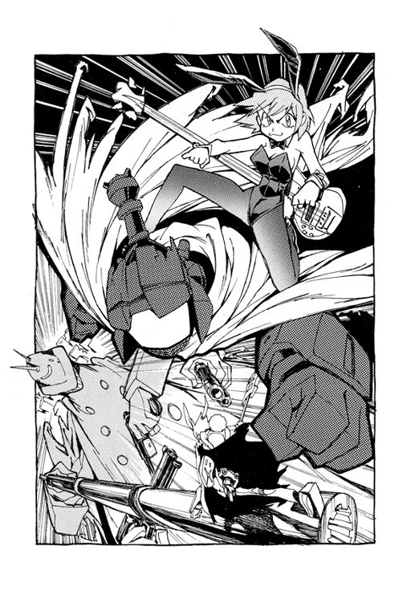
ちっ、と再び舌打ちするハル子に、空中旋回しながらカンチが親指で自分を指し合図する。今度は俺が攻撃してみる、と言ってるのだ。
カンチは飛行しながら例の真紅の大砲──自走砲モードにチェンジする。
この距離と相手のサイズなら外すことはないと判断したらしく、照準レーザーを照射することもなく即座に砲撃する。もちろん命中。〝弾体〟は貫通こそせず弾かれたが、巨大ロボットも今度はかすり傷ですまず、大きくよろめいた。かなり効いてるようだ。
弾かれたカンチの〝弾体〟は旋回して、いつものように砲身に戻ってくる。それはリサイクル可能な弾丸なのである。
カンチは隙を与えず再び発砲。
だが巨大ロボットも倒れながら手にした砲でカンチを狙い撃った。
二つの武器から同時に砲声が響く。
そして──
なんと二者の撃った弾と弾が空中で激突した。それは同じ射線上での同時攻撃だったのだ！
瞬時に爆煙が出現する。巨大ロボットの撃った弾丸が激突と同時に炸裂して散ったのだ。
一方、カンチの〝弾体〟は弾かれて傍らのビルの壁面にめりこんだ。それはマミ美のいる場所の近くだった。それほど大きくはないが、再びコンクリのかけらが周囲に落下する。
しかしマミ美はそれを避けることもなく佇んでいた。その壁にめりこんだ〝弾体〟に目を奪われていたのだ。
砲撃にしくじったカンチは飛行しつつ、もとの人型に戻っていた。どうやら〝弾体〟の予備は備えていないようだ。何度もリサイクルで使ってきたその一発を失い、武器をなくしたらしい。
だが、ふいに赤いカンチのフェイスモニターが眩い閃光を放ち始める。するとその輝くモニター表面から突起物が出てくる。
カンチは自分の顔から伸びてきたその角を自ら握ると、すばやくひきずりだす。
「あれは......」
爆風を避け近くのビルの屋上昇降口に身を隠していたハル子は、そのカンチのモニターから出てきたものを見て衝撃を受けていた。
それはギターだった。いや、おそらくハル子のものと同様にギター型の超兵器なのだろう。
自分のとは少し形がちがうその武器を見て、だがハル子は驚愕していた。
「ギブソンＥＢ─０......」
彼女がこれほど驚いたのは、おそらくこの疎瀬市に来て初めてのことだろう。
そして戦況を見守っていたアマラオも、カンチのその武器を見てやはり驚いていた。どうやらカンチが取り出した武器は、関係者には有名なシロモノらしい。アマラオはその眉のない顔で呆然とつぶやいていた。
「本物だ、本物の海賊王だ」
赤いカンチはそのギターを手にすると閃くように加速して滑翔し、次の瞬間には巨大ロボットのボディを殴りつけていた。鮮やかな、まさに電光の一撃であり、それは優雅とさえ思える見事な動きだった。
巨大ロボットは腹の一部を吹き飛ばされ、内蔵された機械が飛び散る。カンチの一撃で的確に急所を破壊されたらしく、どうやらＫＯらしい。内部から聞こえていた機械音もほどなくとだえた。制御バランサーも停止したのか、転倒して上下が逆転する。逆立ち状態だ。住宅街をきわどくかすめて、それまで頭部であった部分が地面にめりこみ、局地的な地震が発生する。そしてその全身を覆っていたシートが落ちていく。
熱いまなざし。ギターを手にした赤いカンチの勇姿を、頰を染めうっとりと見上げているのは、なんとハル子だ。
ハルハラ・ハル子は恋する少女にもどっていた。その想い人は、いま目の前にいるのだ。
彼女はその愛しい相手の名を口にした。
アトムスク、と。
マサシ、ガク、ニナモリの三人が乗ったトラックがようやく現場近くに到着する。
大人たちはもうすっかり避難していて、彼ら児童による無免許運転を咎める者はなかった。
三人は、ビルの壁面をいまだに見つめているマミ美の姿を見つける。そして彼女の見つめる壁面を見て、そのめりこんだ〝弾体〟に同じように目を奪われた。
めりこんだその〝弾体〟が、おりしも壁から抜けて路上に落ちる。
アスファルト上に、ゴトリという重い音。
その〝弾体〟とは──ナンダバ・ナオ太だった。
細胞硬化モードがとけ、ようやくその場にだらしなく手足を投げ出すナオ太はまだ目を閉じている。かすかに呼吸はしているから死んではいないようだ。
マミ美はつぶやく。
「痛そ」
丘の上のＭＭ工場が白い煙を噴き出した。いつもなら一時的なその噴出が、今日は途切れることがなかった。たちまち疎瀬市はその煙霧に覆われ、次第に視界が奪われていく。
その霧の中に不気味な、なにか大きな影が現れる。倒立してシートを剝ぎ取ったあの巨大ロボットの全貌である。
霧の中に現れたその姿は、巨大な〝手〟だった。
１
「みなさん、お箸の使い方は正しくおぼえましょう」
疎瀬小学校の本日の給食メニューは松茸ごはんだが、ミヤジはそのついでに箸の正しい持ち方を指導しようとしていた。きっと今朝の職員会議でそう決まったのだろう。
しかしミヤジ自身、もともと箸がうまく使えないようで二重に苦労をしている。その持ち方を見れば、どうやらミヤジはバッテン箸という間違った持ち方を覚えたまま大人になったようだ。だが生徒たちに範を示すため、にわかじこみで強引に矯正し、しかも教える者の威厳をなお維持しようと四苦八苦していた。あるいは間違った方法で楽して大人になるといずれはこうしてツケがまわってくることを身を挺して示しているのかもしれない。
しかしそんなことには微塵の関心も示さず、ナオ太は教室の窓からぼんやりと外を見ていた。このところ彼はほとんど口をきかず、なにかというと窓の外ばかりをながめて過ごしている。といっても、外にはただ濃い霧がたちこめているばかりではある。
あの日以来、白い煙は霧となって居座り、ずっと晴れることなくこの疎瀬市を覆っていた。そしてその霧の向こうには、うっすらと〝聳える手〟の威容が見える。
そいつを〝聳える手〟と街の人々は呼んでいた。
地中から、まるで天空そのものをつかもうとするようにのびる巨大な手首。なにしろビルより大きなあのロボットの全体がひとつの手であったのだから、そのサイズは圧倒的だ。小山ほどもあるあのＭＭ工場と並んで同じ規模のスケールなのである。
十日前、ちょうどあの事件のあった翌日、朝のＨＲで担任のミヤジは言った。いいですか、近くにはけして近づかないように、工場の近くに聳えているあの〝手〟はきのう街であばれた機械だそうです、と。
もっとも、あの事件と〝聳える手〟に関する学校からの注意はたったそれだけで、他にはなんの説明もなかった。台風の接近を告げる程度の注意である。
けれどその〝聳える手〟がＭＭ工場の近くにあることは本当は途方もなく危険なことなのである。まさにメルトダウンを始めた原発以上の脅威なのだ。なのに事実を知らない市民はいまだ緊急避難をすることもなくこの疎瀬市に生活している。それは、とある公安組織の情報操作が巧妙に働いたからだ。
そのため、就学児童も通常どおりにこうして学校に通い──今は給食の時間である。呑気なものである。
「ナオ太も家のバイト、手伝わない？」とマサシが声をかける。
そのバイトとはあの三輪トラックによる配達のことを言ってるのだろう。
「結構いいよ」とニナモリも口を添える。「毎月あたらしいゲームソフト、買えるよ」
「............」
けれどナオ太は友人たちのこのせっかくの誘いにも関心はなく、むしろ声をかけられたことが鬱陶しいという様子で黙って立ち上がり、給食のトレイを手にした。
「あれ、ナオ太......」
その皿を見てガクが驚く。ほとんど手をつけていなかったからだ。松茸ごはんもそのまま残っている。
学級ルールによりこのクラスでは給食を残すことは許されない。しかしそこは頭の働くナオ太のこと、ミヤジには体の具合が良くないとかなんとか適当なことを言って納得させ、教室を出ていった。
「なんでナオ太は食べないんだ」とガクは訝しむ。
「食べられないんだろ」とマサシは言う。
心に大きな負担がかかると食欲をなくすタイプというのがいる。ナオ太がそうであることをマサシは知っていた。だからこそバイトに誘ったりなにかと声をかけたりしてるのだが、どうもナオ太の心はあの事件以来ずっと塞いだままである。
自分が操ってると豪語していたロボットに実は弾丸として利用されていたナオ太。しかし、それはそれですごいことだが......。
ナオ太は変に自己イメージの理想が高いんだよな、とマサシは思う。
友人達は心配そうにナオ太の消えた扉をしばらく見ていた。
教室を出たナオ太は、校舎の渡り廊下から空ろな目でまた外の風景をながめていた。
たしかにこのところずっと食欲はない。空腹ではあったがなにも食べる気がしない。それにどうせいくら食べても、いま自分が感じているこの喪失感は満たされないのだ。
街には工場から出る白煙が霧となって満ちている。いまや昼夜を分かたず吐き出される煙に街はすっかり覆われてしまっている。
僕は知っていた、とナオ太は思う。あの白煙が世界から色彩を奪っていく元凶であることを僕はずっと前から知っていた。そう、あれはこの世のすべてを無彩色に変えていく虚無の使者なのだ。
見上げても、もうそこにあるのは青空ではなく、ただどんよりとたれこめた白い霧。そいつはまるで外界には一切なにも存在しないかのようにこの街を包んでいる。いや、本当にこの街の外にはなにも存在しないのかもしれない。ここは異次元に漂流した離れ小島なのかもしれない。だとすると僕はこの喪失感を抱えたまま、永久にこの場所にいるしかないのだ。
──でも、だとするとあいつらはどこへ行ったんだろう。
あの家政婦とバカロボットは。
ハル子とカンチはあの事件以来、ナンダバ家から姿を消していた。その後はなんの連絡もない。けれど、それは当然かもしれない。なにしろ二人は指名手配されているのだから。
いまや街中の掲示板や壁にはハル子とカンチの写真入りポスターが貼られている。そして先日の巨大ロボットの一件は、彼女たちの仕業ということになっていた。
ここは地下にある特殊入国管理局の作戦室。
今、アマラオは部下のキツルバミと二人でモニターに映しだされたＭＭ工場とその傍らの巨大な〝聳える手〟を見ていた。
おりしもキツルバミの操作する端末ディスプレイには管理局中央本部の解析報告が表示されはじめる。これまでのＭＭロボットのデータなどと照合して予想される〝聳える手〟のスペックなどをようやく知らせてきたのだ。報告を読みキツルバミはつぶやく。
「やはり、手、ですかね」
「手だね」
解析結果の第一解答は『巨大マニピュレーター』だった。
そんなことはわかっている、とアマラオは苛立つ。さらに、それがなにをするための手なのかもすでに彼は気付いていた。
丘の上に立つＭＭ工場。疎瀬市の人々は長い歳月のあいだに見慣れて今ではすっかりそれをアイロンに似た工場と認識している。まあ、やむをえないことではある。しかし、もしそれがアイロンに似た工場ではなく、工場に似た巨大アイロンだとしたらどうだろう。
〝聳える手〟の意味するところは明快だ。
巨大な手と巨大なアイロン。しかもそのアイロンにはちゃんとハンドル──すなわち把手部分がつくられている。把手とはすなわち握るためのものだ。
「握るんでしょうか？」
「握り......たいんじゃないか」
「でもそれはあまりにアレですよね、最初からアイロンっぽいし」
「いや、むしろアイロンだったよ、最初から」
それはとてつもなく危険な状況なのだが、とりあえずアマラオたちによる市民への公報──情報操作が成功しているのは救いだった。
いわく、開発途上のＭＭの機械を略奪、暴走させた二人組の犯罪者がいる。
停止した巨大機械には爆発物や放射線などの危険はなし。
街の損害の補償についてはＭＭも一部を認めている。
なお、現在この犯罪者たちは逃亡中──。
その二人組の犯罪者とはハル子とカンチのことである。アマラオたちがそう仕立てたのだ。もちろん政府の協力あっての隠蔽擬装工作だ。
しかし、そうした隠蔽にもおのずと限界はある。さらに、今度〝聳える手〟が動きだせばこの虚偽の公報を行った者に対する責任追及も逃れられない。
早くなんとかしなければならない。
解析報告の続きが届く。モニターのひとつが、カンチが巨大ロボットをギターで叩き壊す瞬間の画像に切りかわった。そして吹き飛ばされたその内部部品、さらにその部品のひとつの拡大画像が映し出される。ただし拡大のため鮮度が不足していてＣＧ補修してもはっきりと形状は判別できない。
それでも、その吹き飛ばされた部品の種別をアマラオたちは理解した。どうやらようやく〝使えるネタ〟が届いたようだ。管理局本部も同じ解析結果を呈示している。
「これがあの巨大ロボットを制御するターミナルコアだとすると、確かに動き出さないことのつじつまはあいますね」
ターミナルコアと呼ばれるユニットはＭＭロボットの制御をつかさどるいわば電子頭脳である。しかもその電子神経パターンにはそれぞれ特有の個体差があり代替がきかないことも報告されている。
つまり、こいつさえ入手すればアイロンや手が動き出す危惧はなくなる上、ＭＭと交渉する際の有力なオプションともなるわけだ。
「今よりこのターミナルコアを最優先で捜し出せ」
アマラオは部下たちに命令し、作戦室はただちに緊急体制となる。
けれどキツルバミは、とりあえずモニターに映ったそのカンチの勇姿をあとでこっそりコピーしておこう、とか考えていた。
放課後、雨が降りだした。しかしその雨も街の霧を一掃してくれることはなく、空は雨雲と煙霞のいりまじった不透明な濃い灰色に満たされていく。
下校途中だというのに疎瀬橋のたもとにある自動販売機でナオ太は缶コーヒーブラックのボタンを押す。缶の取り出し口に手をのばすナオ太は、そのとき橋の下にマミ美の姿を見つけていた。
そぼ降る雨の中、マミ美はいつものようにやはり傘をさしていない。すでに髪と制服はぐっしょり濡れて体にはりついているが、気にせず草むらの中をのぞいていた。どうやらあのタッくんと名づけた野良猫をさがしているらしい。
〝マミ美はいつだって傘もってないよ〟
〝じゃあ雨のときはどうしてんだよ〟
〝少しくらいなら濡れても平気っス〟
かつてかわしたそんな会話を思い返しながら、ナオ太は缶コーヒーのプルリンクに指をかける。
マミ美とはあの喫茶店の前で別れて以来だった。ナオ太のキスを拒んだマミ美。あれから一度も会っていない。
一緒に下校していたマサシ、ガク、ニナモリも、雨に濡れるマミ美の姿に気付く。
「ほらあそこ」とガクがおせっかいにも指をさす。「あれ、ヨメじゃない？」
カンチを操縦し、マミ美に自分の男らしさをみせつけようとしたナオ太。けれど実は弾体でしかなかったナオ太。そのことを知ったマミ美は、今ナオ太のことをどう思っているのだろう。
いや、もうどうでもいいマミ美のことなんて、とナオ太は自分にいいきかせる。そして級友の三人を置き去りに、ひとりその場を立ち去る。
おいナオ太いいのか、とガクが呼びかける。
マサシは黙ってナオ太の背を見ている。
そしてニナモリは──ニナモリは傘ごしに濡れるマミ美の姿を見下ろし、少し複雑な表情をしていた。なぜならマミ美がさがしている猫は、実は今ニナモリの邸にいるからだ。ニナモリが飼っているのである。
──でもしょうがないよ、あんたが悪いのよ......。
先週、ニナモリが拾わなければ、あの猫は死んでいただろう。餓死していたにちがいない。やはりこんな雨の中、冷たくなってうずくまるあの猫をニナモリは偶然みつけたのだ。そっと抱いてみると足にけがをし、鳴く元気もなく瘦せた体は痙攣したようにふるえていた。それが、あのマミ美がいつもつれていた猫らしいとわかったときはとても腹が立ったものだ。そして自分が飼おう、とすぐに決めていた。
悪いけどさがしてもみつからないよ、あの猫はうちで飼うことにしたの、もうあたしの猫なの、拾うなら拾うでちゃんと面倒をみなさいよ、中途半端なことしてんじゃないわよ、とニナモリは心の中でつぶやく。
そんなことは知らずにマミ美は雨の川原で猫をさがしつづける。
すねたようにひとり先に歩き出したナオ太は、人気のない道路でふと立ち止まった。背後からスクーターの近づく音が聞こえてきたのである。
ナオ太の不機嫌な仏頂面がわずかに期待でゆるむ。
──まさか......。
そのスクーターは、そしてナオ太のすぐ後ろで急ブレーキをかけて止まった。
すぐ後ろでスクーターが止まった。
スグウシロデスクーターガトマッタ！
思わず息をとめ振り向くと──そのスクーターに乗っていたのはアマラオだった。
ナオ太は露骨にがっかりした顔で手にしたブラックコーヒーをひとくち飲む。バカ、期待させんじゃねえよ。
「また背伸びしてそんな苦いやつを」とアマラオは言う。「脳は常にブドウ糖を必要とする。もとの脳ミソに戻るにはもっと甘いものをとった方がいいぞ。おまえももう懲りただろ。その頭のＮ・Ｏからなにかが出る度に、みなが迷惑するんだ。Ｎ・Ｏというのは人間の右脳と左脳の対消滅思考パルスを利用して超空間チャンネルを開く技術のことだ。まあ、あの家政婦が戻ってくることはないだろうが、念のために」
アマラオは着ているコートのポケットからなにか小さな紙包みを取り出し、ナオ太に差し出す。受けとってみれば、中には黒いシールが二枚入っていた。その一対はアマラオの眉と同じ形をしていた。
「どうしてラハルが君に近づいてきたのか知ってるか？ あ、ラハルっていうのはあの家政婦の本当の名前ね。彼女の目当てはアトムスクという男だ。星々を盗みとれるほど桁違いのＮ・Ｏ能力者でね。ちょうど一年ほど前、彼はＭＭの手に落ちた。ラハルはそれを追ってこの星に来たんだ。惚れてるのさ」
「............」
アマラオがしゃべったことの半分以上はナオ太にとっておよそ理解できないたわごとだったが、最後のひとことだけは強く耳に残った。
〝惚れてるのさ〟
ナオ太はアマラオを無視するように黙ってその場を立ち去った。
あのときも小雨が降っていた。そして傘を手にした数人の子供たちが追い回していた。タッくんは小さなかよわい子猫で、逃げることなどできなかった。追い回していた子供たちは小学生の姿をしていたが、その正体は悪魔だった。悪魔の街・エンズビルの住人だ。
あの日、マミ美もまた同じクラスの女子高生たちにいじめられ、はいてた靴を川に流された直後だった。足の小さなマミ美は自分に合うサイズのかわいい靴をみつけるのにいつも苦労する。だがせっかく買ったばかりのそのお気に入りを、あいつらは校則違反だとか言って川に投げ捨てたのだ。
靴もなく道を歩くことはとても惨めなものだ。それに足を痛めやすい。けれど川原で追い回されてる子猫を見たときには思わず裸足でとびだし、抱き上げた。そして悪魔たちを睨みつけてやった。
またいじめられてるのかもしれない。初めて出会ったときのことを思い返し、マミ美は不安になってさがしつづける。
もしまたあの子供たちがタッくんをいじめていたら、今度は睨みつけるだけじゃなく、石で殴ってやる。マミ美はそう決めていた。かまうものか。相手は悪魔だ。
「タッくん、どこにいるっスか......」
もう二時間近くもさがしている。川原に風が吹き、寒気を感じる。ようやく雨はやんできたが、濡れた衣服が容赦なく彼女の体温を奪っていく。さすがに疲れてタバコをくわえ、火をつける。
あるいは誰かに拾われたのかもしれない。
ようやくその可能性も思いつく。
マミ美の家はアパートでペットは飼えない。もしお金があればすぐに動物が飼える部屋に引っ越すのだが、今はまだ無理だ。
タッくんはまっくろな可愛い子猫だ。誰かが拾って飼うことにしても不思議ではない。けれど、もしそうならタッくんは自分の前からいなくなっちゃうわけで、それは困る。すごく困る。なぜならマミ美にはどうしてもタッくんが必要なのだから。
タックンガイナケレバヒトリボッチニナル。
マミ美はいつのまにかカバンから携帯電話を取り出していた。たったひとつだけ記憶させた番号がその小さなディスプレイに表示される。アメリカにいるタスクの番号だ。それはマミ美にとってタスクとの最後の絆だった。
もちろんタスクにもマミ美の携帯の番号は教えてある。そして彼女はいつもその携帯を持ち歩いている。けれど、一度たりとも彼の方からかかってくることはなかった。その着メロは鳴らなかった。もうタスクが自分に電話をかけてこないことはわかっていた。
マミ美もまたタスクが渡米して以来、その番号にかけたことはない。なぜならけして自分の方からはかけられない、それは番号なのだ。
じゃあなマミ美、いい彼氏つくれよ。笑いながらそう言ってタスクはこの街を出ていった。
その意味くらいはわかる。
だから、もうこの携帯は持っていても仕方のないものだった。いっそ捨ててしまえばいいとも思っていた。持ってるから未練なんだ。つらくなるんだ。でも、もしかしたら......と思ってしまう。
もしかしたら、今まさにこうしている瞬間にその着メロが鳴るかもしれない。国際電話がかかってくるかもしれない。
俺だよ、元気してる、こっちはダメだ、ろくな女いねえよ、やっぱおまえが一番だよ、来週帰るから、マミ美に会うの楽しみにしてるから、いっぱいおみやげ買って帰るから......。
なんてね。
いつまで待ってんだろ、あたし。馬鹿だな、あたし。
そのときだった。川の中から奇妙なものが現れたのは。
それは小さな機械だった。四本脚のテーブルみたいな形。その脚が動物のように可動して移動できる手のひらサイズの機械。それがマミ美の足もとからほんの二メートルくらいのところに這い出てきたのだ。
さすがに興味を覚えてマミ美がその近くにしゃがみこむと、その小さな機械の方も彼女を見上げた。つい、その奇妙な機械と見つめあって（？）しまう。
これはなあに、あまり可愛くはないっスね、とか思いながら、マミ美はタバコの煙を吹きかけてみた。
すると、機械はマミ美の吐き出した煙を吸い込み、なんだか嬉しそうに動きはじめた。ガチャガチャと器用にその機械の脚を使い、マミ美の足もとでぐるぐる旋回する。
どう対応したものかわからず、マミ美はしばらくその様子をながめる。
「元気小僧っスね......」
しかし無邪気に動きまわる機械はふいにマミ美にとびつき、その手にした携帯電話をうばいとった。すばやい動きだ。もっともその行為は小犬がボールをくわえるように甘えて遊んだのかもしれない。携帯をつかんだ部分は、どうやらそいつの口らしい。
そいつはさらにその口を大きくあけ、そして携帯を食べようとする。
「先輩の電話番号、こらやめろ、止まれ！」
思わずマミ美は制止する。すると機械は意外に素直にその命令をきき、口をあけたまま動きがぴたりと停止した。どうやら、いわゆる〝おあずけ状態〟になったらしい。
あぶなかった。タスクの電話番号をメモリーした唯一の携帯。これがなくなると、自分とタスクの絆がなくなってしまう。もうタスクが電話をかけてこれなくなる。
──かけてこれなく......なる？
けれどふとマミ美は自分に問う。
ではこの携帯を持ってれば、いずれは電話がかかってくるのか？
かかってくるというのか？
タスクとの絆。そんなもの、もうないのに。
本当は最初からなかったのに。
見れば機械は無邪気に口をあけたまま、次なるマミ美の指示を待っている。
「食べていいっス」とマミ美は言う。
空腹だったらしくその機械はたちまち携帯電話機をバリバリと嚙みくだき、そして念入りに咀嚼し、飲みこんだ。
「そのかわり責任とるっスよ」とマミ美は言う。「今日からおまえはタッくんっス」
２
まだ夕方かと思っていたがすでに外は薄暗い。秋の落日は早いのだ。
灯りもつけず薄暗い部屋のベッドで、ナオ太はぼんやりとまた窓をながめていた。
ベランダの向こうには夕闇と霧のいりまじった濃密な質量の空間がある。まるであまり陽の届かない深海の底にいるようだな、とナオ太は思う。巨大な水圧に囲われた囚人。それが今の僕だ。
ジェット旅客機が街のはるか上空を飛んでいく音が聞こえる。だったら、あれは海面をすべる船なのかもしれない。海底のコロニーに囚われたこの僕がいることも知らず、彼ら旅客たちは遠いところへ行くのだろう。自分の知らない外の世界へ。
ベッドに寝転ぶナオ太はそのまま仰向けになる。二段ベッドの下に寝ているので、目の前には上段の底が見える。
かつてそこは兄タスクが、そしてつい最近まではあいつが寝ていた場所だ。
ナオ太の前からいなくなった者たち。
ベッドの傍らにはギターがたてかけてあった。それはあの衛星落下のおりにナオ太の頭からひっぱり出されたものだ。あんたのバット、とあいつは笑ってたっけ。そしてあいつはこの閉ざされた街からいなくなってしまった。どこかへ行ってしまった。
ベッドから起き上がるとそのギターを手にし、弦の一本を弾いてみる。
深い海の底で孤独な音色が響いた。
やがて夕食を伝える父親の声がして、ナオ太は階下におりていく。
しかし、居間の襖をあけると思わず硬直して叫んでいた。
「ああ！」
いたのだ。
そこに。
誰が？
もちろん、あのベスパ女がだ！
「うっす」
何食わぬ顔で平然と食卓を囲んでいるハル子は、なぜかその首に派手なレイをかけ、アロハ姿である。
「おまえ」と言うナオ太の声はもちろん上擦っている。「なにあたりまえの顔して、お茶の間してるんだよ......指名手配のくせに！」
「ああ、言ってなかったっけ？」とカモンが説明する。「ハル子さんは『叶姉妹と過ごすゴージャス・ハワイ島の旅六日間』に参加するため長期休暇をとっていたんだ」
「............」
この数日、ハル子の行方を追って捜査員がなんどもナンダバ家を訪ねてきていた。彼らに対し、カモンはあんなやつはうちとは無関係だ、と冷たく答えていたものだ。あれほどハル子のことが好きとか言ってたくせに警察に手配されるとすぐに他人扱いにする。大人ってやつは本当に勝手だと腹を立てていたナオ太である。
しかし、どうやらカモンはハル子を見限ったのではなく、行方を知っていながら隠していたらしい。あきれたものだ。その口ぶりからすると彼女の出かける日程などもちゃんと把握していたようだ。
「ほら、ハル子さんのハワイみやげじゃ」とシゲクニはたった今もらったらしいみやげの品を嬉しそうに見せる。それは木彫りの熊とホワイトチョコである。ありふれたみやげものだ。
いや、ちょっと待て、とナオ太は思う。
木彫りの熊？ ホワイトチョコ？
「それ、ハワイじゃないだろ！」
「今度行くときはぜひ僕と」とハル子にすりよるカモン。
「やはりハワイのチョコはひと味ちがうのう」とホワイトチョコを齧って御満悦のシゲクニ。
すでに二人はハル子の帰宅に浮かれていて、ナオ太の言うことなどぜんぜん聞いてはいなかった。
「今度行くときは」とハル子は言う。「タッくんと二人きりがいいな」
なんと、と同時に狼狽の声をあげる父と祖父。
ハル子は立ったまま硬直しているナオ太の手をとると、いきなりひきよせ、その頭を抱え込んでいつものようにグリグリしはじめる。
「おまえなんかとどこにも行くもんか、やめろ、こら、痛いだろ！」
「またまた照れちゃってえ」
「ええのお、グリグリしてもらえて」とシゲクニが羨ましそうにつぶやいた。
──痛いんだよ、マジで......。
夕食を早々にすませて風呂に入ったナオ太は、浴槽の中でグリグリされたばかりの頭にそっと手をやる。
あの乱暴者め......。
窓から笑い声が聞こえる。居間にいるハル子、カモン、シゲクニが酔っぱらってもりあがっているのだ。指名手配されているというのに、そして手配犯をかくまっているというのに、うちの大人たちにはその自覚と危機感がまったく欠落しているらしい。
「オキラクなやつらめ......」
しかしそういうナオ太の顔は、ここ数日になく嬉しそうだった。
その夜更け。
ハル子は酒盛りで好き放題に騒いだあと当然のようにナオ太の部屋に入ってくる。そして灯りを消すと、ここ数日の失踪などなかったかのように二段ベッドの上にもぐりこむ。もちろんそこは彼女の場所なのだ。下のベッドで目を閉じていたナオ太は、けれどまだ眠ってはいなかった。眠れるわけがなかった。
今、この部屋にはハル子がいる。すぐ真上で寝ている。ただそれだけのことが、ナオ太にはなんだかすごい奇跡のように思えた。
ナオ太は小さく声をかけてみる。
「もう寝た？」
しかしハル子は答えず、微かな吐息が聞こえてくるだけ。たちまち眠りこんだのだろうか。あんがい疲れていたのかもしれない。
「......おまえって、いったい何者なの？」
なかばひとりごとのようにナオ太はつぶやく。
「ホントはどっから来たの？」
「なんだなんだ」
いきなりハル子が上から顔を出し、ナオ太をのぞきこむ。
「なんだ、起きてたのか」
「もしかしたら、今、寝ているハル子さんにひそかに告白しようとか思った？」
「馬鹿、そんなわけないだろ」
「照れてやんの」
そのしたり顔の笑みがなんだかくやしくて、ナオ太はまたわざと不機嫌な表情をつくってみせる。
「なんで戻ってきたんだ」
「タっくんに会いに」
「うそつけ」
「ね、あれしようか」とハル子は声をひそめて言う。
「なに？」
「ジンコウコキュウ」
「......いつもやってるじゃん」
「あんなんじゃなくて、もっと本物の、大人の、とろりとしたすごいやつ」
「とろりはやめろ」
ハル子はベッドの上段から飛び降りると、ナオ太の褥にのしかかるように顔を近づけてくる。暗闇の中、間近に迫るハル子の顔。その吐息。その扇情的な唇の気配。
ひきこまれるように唇を重ねてしまいそうになるナオ太は──けれどふとわれにかえり、顔を離して距離を置こうとする。
いけない。これはいつものハル子の悪ふざけだ。こいつのペースにのせられてはいけない。
そんなナオ太の挙動を見て、しかしいつもなら意地悪い表情をするハル子は、なぜかやさしく微笑んでいるようだった。そして囁いた。
「一緒に行く？ ぜーんぶ捨てて、あたしと一緒に、行く？」
「............」
どこへ、とナオ太は訊かなかった。訊かなくても、わかっている。どこか外の世界へ行こうとハル子は誘ってくれているのだ。ここではないどこか。そこはきっと、ナオ太がずっと憧れていた遠い場所にちがいない。
「今夜は、なんかやさしいじゃん」
「タッくんは、まだ子供だから」
「............」
そして──。
自分でも驚いていたが、次の瞬間、ナオ太は思い切りハル子の胸にしがみついていた。しがみついて顔をうずめ、泣き出していた。
「どこ行ってたんだよ、急にいなくなってさ......」
いつだったろう、とナオ太は思う。この前に泣いたのは。もうずっとずっと昔から、僕は泣いたことがなかったのに......。
そんなナオ太の頭をハル子は黙ってやさしく抱いてくれた。
閉塞感とは現実の街にではなく心の中に現れる。それは目の前の日常性が唯一のものであると錯覚し、他の可能性や想像力を失ってしまうことだ。煙霧に覆われたこの街で、少しずつその閉塞感に蝕まれていたナオ太。そして次第に外の世界があることまで忘れようとしていた。すごいことのない、あたりまえのことしかおこらない世界に慣れようとしていた。
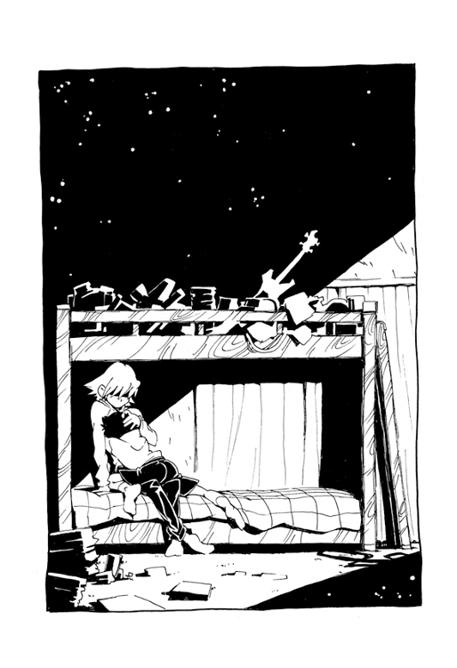
だけど、とナオ太はこのとき考えていた。だけどハル子はここにいる。いま目の前にいて抱きあっている。だから外の世界があることを僕は忘れない、と。
それから一週間が過ぎた。
疎瀬小学校の校庭ではミヤジのクラスの生徒たちが走り高跳びの順番待ちをしている。もちろん体育の授業である。昨日まで跳べなかった高さのバーをクリアしようと意気ごむ生徒たち。体操服姿のニナモリ、マサシ、ガクもいる。しかしナオ太の姿だけはなかった。
ハル子が帰ってきたあの日以来、実はナオ太はずっと学校に来ていないのである。
「いつから来るんだろうね」とニナモリが言う。
「やばいよなあ」とマサシはため息をつく。
「やばいの？」
「やばいよ。ミヤジが家庭訪問するらしいけど、ここんとこ家にもいないみたい」
「家出？」
「もしかしたらさ」とガクが口をはさむ。「あのチュウのお姉さんと駆け落ちだったりして」
「やばいよなあ」
「でも......」
でも、とニナモリは思う。むしろ駆け落ちするくらいの度胸があるなら〝大丈夫〟だろうと。
ナオ太の抱える心の痛みは結局はナオ太にしかわからない。けれど、なんとなくその痛みの想像はつくような気がした。出口のない迷路をあてどなくさまよう救いのない状態。ニナモリだってそんな迷路をくぐりぬけてきたのだ。だから抜け出す方法はきっとある。素直に泣けばいい。素直に思ってることを言えばいい。そう、大人ごっこをやめればいいのだ。
〝お父さん、お母さん、別れちゃやだ......やだやだやだあ〟
両親の前で号泣したニナモリ。あの文化祭の劇の前日、子供のように、いや子供らしく、子供であるから地団駄を踏み、泣きくずれてニナモリは自分の思いを訴えた。
ナオ太ももし誰かの前で泣いていれば大丈夫だろう、とニナモリは思う。たとえ学校へ来てなくてもね。そんなのはたいした問題じゃない。
そのナオ太はハル子と一緒にいた。
あれ以来、ナオ太は学校をさぼってハル子と二人でずっと遊び歩いていたのだ。
遊興費はナオ太のなけなしの小遣いと、食い逃げなどの犯罪行為になんの躊躇もないハル子のボウジャクブジンな性格によりなんとかしのいでいた。
こんな自由な気分があるなんてナオ太はそれまで想像したこともなかった。どんな夏休みもこの数日にはかなわない。それはまさに特別なシーズンだった。
オールナイトの映画館に朝までいた。競馬で大穴をあてた。いや、その大枚は次のレースで結局すってしまったが、それがまた愉快で大声で笑った。ホテルのプールで一日を過ごし、夜はドーム球場に足をのばしてプロ野球の試合を生で見た。さらには小学生の身でありながらもっと過激でいかがわしい、スニーカー文庫にはとても書けないような場所で大胆なことを体験したりさせられたりした。
けれど、どんな危険な場所でもハル子と一緒なら安心だった。そう、幼いころ兄につれられて夜中に火事を見に行ったあのときのスリルに似ていた。
二人乗りベスパのスピード違反を取り締まろうと追ってくる警察をからかい、一日を過ごしたこともあった。その日はパトカー二台と白バイ一台がガードレールに激突し、クラッシュした。しかしハル子はもちろんそのような瑣事などは気にもかけなかった。
そして今──二人は小高い丘のコンビニ前に座り込みカップラーメンを食べていた。
疎瀬市の街は相変わらず煙に包まれている。煙霧の向こう、西に傾く太陽が、ぼんやりと大きな赤い火の玉に見えた。
ラーメンを一口食べたハル子がいきなり不満をもらす。
「まず！」
「だから言ったのに」ナオ太は得意気に言う。「そんな新製品よりいつもの方が安全だって」
コンビニでナオ太は食べなれた銘柄のラーメンを選んだのだが、ハル子は止めるのもきかず、店頭に並んでいた新製品に手を出したのだ。なんだかまずそう、と思ったナオ太の予想はどうやら当たったらしい。
自分の選んだ商品にケチをつけられ、ハル子はムッとする。そして、チェンジ、と叫ぶと自分のとナオ太のラーメンを強引に取り替えた。なんて勝手なやつだろう、とナオ太は思う。そのわがままぶりは子供以下だ。
「おまえさ、こういう勝手なことばかりやってると、そのうち痛いめにあうとか思ったりしない？」
「いいじゃん、べつに」としかしハル子は言う。「そんときゃ痛いめにあえば。ときにはまずいラーメン食ってみたりするのも、人生の豊かさってやつ？」
そしてナオ太から奪ったラーメンを美味しそうにすすり始める。
そんなこと言うんなら自分で食べろよな、とナオ太はぶつぶつ文句を言う。
実際のところ一緒に一週間を遊び歩き、ナオ太はハル子という女の身勝手さをあらためて思い知らされていた。この女は本当に自分の利益しか考えず、しかもそれを隠そうともしない。むしろそんな身勝手な自分を誇っているようにすら見える。
けれど、彼女のそのわがままな性格を見つけるたびに、なぜかナオ太は嬉しそうに微笑むようにもなっていた。
「鬱陶しい煙だよな......」
ハル子はラーメンを食べつつ、いまいましそうに街をはさんだ向こうの丘に見えるＭＭ工場を見ている。その工場もまた自ら吐いた煙に覆われ霞んでいる。
ハル子が、ずっとそのＭＭと敵対していたことはナオ太も知っている。
「なんでそんなにＭＭが嫌いなの？ いつも戦ってるのは仕事？」
「すっごく欲しいものがあんだよ」とハル子は、したたかに微笑む。「それをやつらが横取りしたんだ。だから、とりかえさなきゃ」
「............」
そのすごく欲しいものというのはおそらくあのアマラオの言ってたアトムスクとかいう男のことだろう。けれどナオ太はそれに関して深くは尋ねなかった。たぶん尋ねても正直には話さない。ハル子はそういうやつだ。むしろ大雑把ではあるが、自分の本当の目的らしきものについて口にしたことが珍しい。
それより、ナオ太はずっと言いそびれていた別の疑問を口にしてみた。
「......ホントはなんで戻ってきたんだ？」
僕のところへ、戻ってきた、本当の、理由は、なに？
ハル子は答える。
「あたしにはタッくんが必要なのさ」
コノザンコクナウソツキメ。
ナオ太は知っている。ハル子が本当はナオ太のことなんて必要としてないことを。そんなことはわかっている。
押しつけられたラーメンを一口食べ、ナオ太は顔をしかめる。なんたるまずさだ。
そしてこんな女と一緒にいる自分がおかしくて思わずまた笑ってしまった。
一方、疎瀬市の霧の底では人知れず新たな脅威が成長を始めていた。
夕闇の裏通り。マミ美が新たなペットと共に身をひそめている。
〝機械のタッくん〟は、あれからずいぶんと育ち大きくなっていた。いまやそのサイズは大きな犬くらいになっている。もちろんマミ美が育てたのだ。
川で拾った直後、マミ美は餌として携帯電話機ばかりを与えていた。なにしろ自分の携帯を齧られたものだから、タッくんはそればかりを食するのだと思い込んだのだ。
昨今、駅前には住所氏名を書くだけで携帯電話機をただでくれる店が数軒あった。だからマミ美はそういう店で集められるだけの携帯を集め、タッくんに与えたりした。
タッくんはよく食べた。旺盛な食欲で、それらの携帯をたちまち平らげ、そしてより多くをねだり、マミ美を困らせた。
けれど、ほどなくこの新しいペットの餌はべつに携帯でなくてもいいことが判明した。多少の好みはあるが、ほとんどの機械と金属は口にするようだ。そして食べるとそのぶんだけきちんと大きく育った。
そして今はボディの一部を首輪でつながれたマミ美の聖なる獣である。
〝聖なる獣〟たるゆえんは、このエンズビルに災いをもたらすからだ。
そう、人知れず育つ新たな脅威。
二日前、街には再び放火騒ぎが起こっていた。それは疎瀬新田高校の生徒の家だった。より正確に言えばマミ美をいじめたことのある生徒の家だ。
しかしマミ美がやったのではない。犯人はその放火の瞬間を目撃されている。
深夜、怪しい四本脚の機械がくわえたタバコで家に火を放つところが、数人の通行人により目撃され、通報されていた。
マミ美がやったのではない。マミ美のペットがやったのだ。
「いいっスか」とマミ美はタッくんに言いきかせる。「マミ美の嫌なことはしないこと。マミ美の言うことをきくこと。そしていつもマミ美のそばにいること。マミ美はそういうタッくんが好きッス」
「ギギギギ」
もしかしたらその機械が大きく成長したのはマミ美のその情意が強く影響したためかもしれない。
ギーコチョン、ギーコチョン、と不気味な作動音をたてる四本脚の機械をひきつれ、今夜も街を徘徊しはじめる危険な女子高生。
そしてここはエンズビルの住人たちが眠る悪魔の住宅街だ。
いけ、聖なる獣よ！
３
翌朝。ミヤジは小学校へ行く途中、ナオ太の家に立ち寄った。
この一週間、ナオ太は学校を休んでいる。電話連絡をしても、ああ今日も休みです、と父親がそっけなく答えるだけ。きちんとした理由も告げず、自分の生徒が一週間も学校にこないのは由々しき問題である。
「おはようございます、ミヤジです......」
客も店員もいない店先をのぞく。パン屋なのに、なぜか店内には書店の倉庫のように雑誌らしきものがうずたかく積み上げられている。どうやら印刷したばかりのミニコミ誌らしい。表紙には『ＣＯＭＥ ＯＮ ＭＡＢＡＳＥ』とある。はて、どこかで見たような、とミヤジは首を傾げる。
「これは先生おはようございます」
奥から顔を出した男が如才なく頭を下げる。ナオ太の父親、ナンダバ・カモンだ。
「ああ、ナオ太ならたぶん今日も休みです」
「どこか体の具合でも？」
「いいえ、五体満足、すこぶる良好でしょう」
「病気じゃないなら、学校をさぼるのは困りますね」
思わずミヤジは責めるような口調になる。
しかしカモンは妙な心得顔でミヤジを見てニタニタしているばかりであった。
長い髪を後ろで束ねたどこか浮世離れした風貌。人を食ったような表情。その眼鏡の奥の目はなにを考えているのか読めない。ミヤジはこの父親とこれまであまり親しく口をきいたこともなく、少し不気味なものを感じたが、だからといって引き下がるわけにもいかない。自分は聖職者なのだ。
「実は私、小学生のときハムスター係だったんですよ」
カモンは急に神妙な口調で語りだす。
「わかるでしょ、ハムスターの世話をする係」
「............」
いきなりなんの話だ？
「だけどね、つい三日間、学校をずるやすみしたことがあるんです。休んでぶっとおしで家にあったビデオを見てたんです。モンティーパイソン。知ってます？ あれは面白かったな。でね、三日たって学校行くと死んでたんです。そのハムスター。なにしろ、クラスにハムスター係は私ひとりしかいなかったから、私が休めば誰も世話をしないわけです。そのとき、私も学びました。学校は絶対にさぼってはいけないと。息子の不始末は父親の不始末。だから、私がこの手でかたをつけます」
「どうなさるおつもりですか？」
「殺します」
「いや、なにもそこまでしなくても」と、すっかりカモンのペースにのせられるミヤジ。「幸いナオ太君はハムスター係でもありませんし。とにかく、ナオ太君にひとめ会わせてください」
「ですが、これはただの登校拒否ですから」
「ただの？」
「登校拒否。ここしばらく家にも帰ってません。いまごろはどこにいるのやら......」
「いないんですか、ナオ太君」
さすがにミヤジは驚き慌てる。
「もしかしたら、この一週間、ずっと？ ナンダバさん、小学生が学校にも行かずに──」
「あいつ、勉強できるでしょ」としかしカモンは落ち着いて言う。
「クラスで一番です」
「成績表はいつもオール５だ。でも一学期のその通信簿に『もう少し素直に』と書いたのは、あれ先生でしょ。大丈夫。勉強ならしてますよ。いい家庭教師がついてね」
「............」
大変だ、これは大変な問題家庭だ、この父親は少しおかしい。
それにしても、とミヤジは思う。家に不在ならナオ太は今どこにいるのだ？
疎瀬市は朝のラッシュ時間をむかえていた。道路の交通量は増し、歩道は通勤通学のため足早に急ぐ市民たちであふれている。
駅裏の通りには、線路沿いの道路に面した大きな公園があった。すべり台や砂場などの設備があり、周囲はイチョウの木で囲われている。こうした朝時、その露に濡れたベンチには、たまに酔っぱらいやホームレスが寝ていることもある。もちろん、急ぐ市民たちは、彼らのことなど見向きもしない。死んだようにホームレスが寝ていても、ほとんどの市民は自分の生活に関わってこないかぎり無関心なのだ。
けれど今、その公園のベンチで寝ている者を見て、ふと立ち止まる少女がいた。
ニナモリである。
そしてベンチに毛布一枚で身を寄せあって眠っているのは、他ならぬナオ太とハル子の二人だった。放浪の旅芸人コンビ、いや、同じ巣に眠る二匹の動物のようにも見えた。
ニナモリはしばらく、そんな二人の寝顔を見ていた。
なんだか妙に安らかな寝息で目を閉じているナオ太の顔。
これは素直に泣いたのかもな、とニナモリは思った。もう大人ごっこはやめたのかもしれない。
ずる休み中のクラスメートを見つめる委員長の表情には、少しばかりやさしい微笑みが浮かぶ。
──あたしは長靴を買ってあげられなかったけど、がんばれよ、猫さん。
やがて少女は自分の一日に向かうため、再び通学路を歩き出した。
街を包む深い霧。しかしそれは朝霧ではない。そしてこの霧は、昨日よりもまた確実に濃くなっているようだ。
その白濁した大気に隠れるように、狭い路地裏をマミ美が歩いている。もちろん傍らには妙な作動音をたてながら歩行するあの機械のタッくんをつれている。タッくんは、なんだかさらに大きく成長したようだ。もはや犬というよりはロバくらいのサイズである。
「今夜はこんくらいで許してやるっスか......」
手帳を見ながらつぶやくマミ美の目の下にはうっすらと隈があり、彼女は見るからに疲れていた。このところ毎晩のように〝仕事〟をしていたが、しかし徹夜になったのはこれが初めてのことである。
もちろんマミ美の仕事とは復讐であり、手にしているのはどうやらその罰を受けるべき者のリストらしい。おそらく彼女をいじめた者の名が列記されているのだろう。
ふと前方から話し声が聞こえ、あわてて路地のかげに隠れる。機械のタッくんをつれてるところを人に見られるわけにはいかない。
話し声の方を用心しながらうかがうと、そこには酒屋があった。看板には『清酒マサムネ』とある。話し声の主は二人の男の子だった。マサシとガクだ。
「昨夜でしょ、フジピョンの姉ちゃんの原付きもやられたって」
「あのヤンキー姉ちゃん？」
「二丁目からこのへんまでは、ごっそり被害にあってるって......」
なんと、二人が話題にしているのは、他ならぬマミ美の〝仕事ぶり〟についてだった。
そう、最初こそ放火をさせていたのだが、タッくんはどちらかというとマミ美の命ずる仕事より自らの食欲に忠実だった。そこでマミ美も作戦を少し変更したのだ。つまり相手の家に車かバイクがあった場合、それをタッくんに餌として与えることで放火の代わりとみなすことにしたのである。その結果こんなに育ってしまったタッくんを今日からどこに隠せばいいのだろう、とマミ美は少し困っていた。
路地にひっぱりこまれた機械のタッくんがいきなり鳴き始める。
「ギギギギギ......」
それは餌を見つけてとびかかる前の唸り声だった。どうやらタッくんが目をつけたのは、酒屋の店先にある三輪トラックのようだ。
マミ美はあわててタッくんをつないだ首輪の鎖を渾身の力でひっぱるが、いまや機械のタッくんは彼女の力ではとても抑え切れぬほどに成長していた。
「やめるっス、あれは『マミ美の仕返しリスト』には載ってないっス」
けれど、ついに飼い主の非力な手をふりきり、四本脚の機械はめざす三輪トラックへと駆け出す。
マミ美は苛立つ。どうして、どいつもこいつも自分の思い通りにならないのか。
「なんでこういうことするっスか！ タッくんはマミ美の言うこときかなきゃダメなんス！」
しかしタッくんはもはやマミ美の言葉など無視し、うまそうなトラックの車体にとりついてバリバリと齧り始めていた。その口は金属のフレームや部品をやすやすと嚙み砕き、飲みこむ。恐るべき食欲と咀嚼力だ。
もちろん驚いたのはマサシとガクである。なにしろいきなり路地から〝ロボット怪獣〟が飛び出し、自分たちの愛車を食べはじめたのだから。
その〝ロボット怪獣〟の行方を懸命に追っている者たちがいた。アマラオたち特殊入国管理局の局員である。
今アマラオはキツルバミが運転する車の助手席で、その正面に設置されたパネル上のマップを見ていた。それは一見したところナビシステムのようだが、実は特務用レーダー装置なのである。あの巨大ＭＭロボットから分離した部品、電子頭脳のターミナルコアを捜すための装置だ。ターミナルコアさえこちらで押さえれば、アマラオたちは大きな切り札を握ることができる。
しかし、アマラオやキツルバミの数日におよぶ捜査にもかかわらず、それほど移動能力があるとも思えないターミナルコアの行方はいまだにつかめていなかった。
ターミナルコアはあの〝聳える手〟と特定の電磁波で交信している。だからその電磁波の逆探知につとめているのだが、なにぶん出力が微弱でしかも波長が不安定なため、作業は難渋しているのだ。
けれど、いよいよキツルバミの車は目標の近くまで接近しているはずだった。
実は昨夜から、そのターミナルコアの出す電磁波がより明確になってきたのである。その出力は次第に強力になり、いまや半径数百メートルのエリアまで特定が可能になっていた。
だが喜んでばかりもいられない。それは損傷していたターミナルコアが自己修復していることの証かもしれないのだ。
車を運転しつつキツルバミは不安な表情になる。丘の上で煙を吐き出し続ける工場が、おりしもより大量の濃い白煙を噴き出すのが見えたからだ。それはまるで、いまだに全世界を煙で満たせぬことに苛立っているかのようである。
今では彼女もそのＭＭ工場の本当の危険性を知っていた。
「君も見たんだってな、あの映像」とアマラオが言う。
「先週、管理局で」とキツルバミは答える。
数日前、キツルバミは管理局の中央へ出向いたおり、恐ろしい映像を見せられたのだった。
最初は極地かと思った。凍った湖のように平らな大地がいちめんに広がる風景。地平線の彼方まで、その鏡のように平らな大地は広がっていた。けれど、それは極地などではなく、なんと地球外惑星の風景だった。上空には見慣れた月ではなく巨大衛星が浮かんでいた。
そしてその映像が異星の風景であること以上に異様であったのは、その広大な平面の大地に巨大なアイロンが鎮座していたことだ。それは疎瀬市の丘に建つＭＭ工場とまったく同じものに見えた。しかもそれは特定の場所に建てられたものではなく、大地の上を移動していた。それもただ移動しているだけではない。どうやら地表上のわずかな凸凹を察知すると近づいて踏み潰し、延ばしてしまう習性があるようなのだ。
キツルバミは説明されるまでもなくすぐに気付いた。
その惑星の表面がいちめん平らなのはすべてその巨大アイロンの仕業だったのである。巨大アイロンは丘も山も山脈も芽吹いた命もすべて許すことのできない、全世界を病的に平均化しようとする偏執的な意志の具現なのだ。よく見れば映像には遥か彼方の地平を移動している複数のアイロンも確認できた。なにものも生きていない死の平面上を、ただ巨大アイロンが無言で滑走するだけのシュールな世界。
キツルバミはさすがに現在この地球が置かれている危機的状況を察し、ぞっとしたものだ。
そのＭＭの巨大アイロンは、いま地球にも進出してきている！
「大丈夫、ターミナルコアさえこちらで先におさえればなんとかなる」とアマラオは言う。「なんとかしなきゃ、この星はおしまいだ......」
「でも」と、キツルバミは気にかかっていたことを思い切って口にしてみた。「噂の海賊王がここに来ているなら、なんとかしてくれるんじゃないですか？」
ＭＭの病的な平等主義を反人間的ととらえ、この銀河で勢力を二分して戦っている組織が光域宇宙警察フラタニティである。しかしＭＭがもっとも恐れる敵はそのフラタニティではなく、紅の海賊王アトムスクというたった一人の男であるらしい。彼はどちらの陣営にも所属せず、銀河の数々の星でＭＭの進出を妨害し、その野望を挫いてきたという。
「身内じゃないからあてにはできんよ」と、けれどアマラオは言う。「それに、そのアトムスクの反応も途絶えたままだしな」
その海賊王アトムスクが一年ほど前にＭＭに捕らえられたという情報をアマラオたちもつかんでいた。そしてあのカンチというロボットは、そのアトムスクとなんらかの関係がありそうだと推測していた。なぜならカンチからはときおりアトムスクのパーソナル生体磁気反応が検出されたからだ。そうであるなら、ＭＭがカンチの捕獲に拘泥するのも納得がいく、とキツルバミは思う。もっともアマラオの言うように今はそのアトムスク反応も途絶えていて、やはりこの危機を回避するには目標のターミナルコアを捜し出すほか手はないらしい。
正面の信号が赤になり、キツルバミはブレーキを踏む。
その彼女のミニスカートからのぞく白いタイツの足を見て、アマラオの眉が微妙に動いた。そのまま横目に部下の体を検分する。
もちろんキツルバミはその視線にすぐに気付いた。そして上官がなにを考えているかもだいたい察しがついた。こういう空気は簡単に読める。案の定、アマラオは言う。
「休みの日は、なにしてるの？」
おいおい、声のトーンが違うぞ、とキツルバミは思う。この非常時に色気に逃避するな。第一、おまえはあのハル子に惚れてるんだろ。
「あ、プライベートなことは──」
あなたとは話したくない。
言葉の後半を濁したのは、もちろん職場の円滑な人間関係のためである。
「寂しいこと言うなあ。人は一人で生きてるわけじゃないんだからさ」
けれどアマラオはステアリングを握るキツルバミの手に、図々しく自分の手を重ねた。
またか、とキツルバミは思う。この男はもう、目の前の女を手に入れたつもりでいる。部下の女なんてその気になればいつだって自分のものだと思っているのだ。馬鹿め。
「こういう関係は問題が多いですから」
「なに、こういうことで生じる問題なんて小さいものさ......え！」
そのとき、目前の交差点にいきなり大きなものが飛び出してきて二人を驚かせた。
それは四本脚で歩く異様な機械である。しかもそいつは女子高生を首輪につないで引きつれていた。
「やめて、タッくん」と叫ぶその女子高生はもちろんサメジマ・マミ美だ。
「タッくん？......ターミナルコアか！」
マミ美の呼び名の意味を勘違いしつつ、しかし結果的には機械の正体を正しく認識してしまうアマラオ。
「管理官、あの大きさは......」
「でかいな」
アマラオとキツルバミはそのターミナルコアの大きさに驚いていた。せいぜい子猫くらいのサイズを目安に捜していたのに、いま目の前に出現したのは馬ほどもある機械だ。だがその四本脚の機械がターミナルコア本体であることはまちがいない。レーダーパネルの表示がそう告げている。
アマラオは昨夜からこのターミナルコアの放つ電磁波がいきなり強くなった理由をおぼろげに悟った。自己修復というより成長したのだろう。しかし、どうして？
「ちがうタッくん」とマミ美が叫ぶ。「マミ美はこんなことしてほしいんじゃない！」
もしかしたら、とアマラオは思う。もしかしたらあの女子高生が育てたのか？
プログラムではなくハード部分を育てるというのは妙な言い回しだが、ＭＭのロボットであるなら地球の常識では計れない機能を有していても不思議ではない。
だがそんなことに思いをめぐらしている場合でもなかった。向かいの対向車線で信号待ちしていたハードトップがいきなり〝嚙みつかれて〟大破する。どうやらその成長したターミナルコアは車を食べる習性があるらしい。
そして次にはキツルバミの車に目をつけ、四本脚でまっすぐこちらに迫ってくるではないか！
アマラオとキツルバミはすばやく銃をとりだすと、窓から身を乗り出して同時に発砲する。が、ターミナルコアのボディはその銃弾をすべてはねかえした。ＭＭ製品は丈夫で高品質を誇っていた。
突進を阻止できないと悟り、二人は車外に飛び出す。間一髪で命は助かるが、車はターミナルコアの餌食となる。ボンネットが剝がされ、エンジンを齧られる。どうやらそこがいちばん美味しい臓腑であるようだ。
危険を感じて距離をとるアマラオとキツルバミは、しかしターミナルコアとは別に傍らの歩道にいる〝そいつ〟の姿を見つけて驚いていた。キツルバミは思わずつぶやく。
「カンチ様！」
そう、そこにはなぜかあのカンチが佇んでいたのだ。
こんなところでいったいなにをしてるのだろう、とアマラオは訝しむ。いや、そんなのはきまっている。この成長したターミナルコアに反応してやってきたのだ。そう考えるのが合理的だ。アマラオはカンチのボディカラーが青に戻っていることも確認する。やはりな。アトムスクのパーソナル反応はやはり体が赤いときにしか発しないようだ。
「ギギギギギ......」
車に齧りついていたターミナルコアが激しい反応を示した。どうやらカンチの発見はそいつにとってかなり刺激的なことであるらしい。
「ギイ！」
ターミナルコアはさきほど以上にすばやい動きで襲いかかり、たちまちその足でカンチの体を押さえつける。いつのまにかターミナルコアに逆に首輪でつながれているマミ美は乱暴にひきずられて喘いでいた。
アマラオとキツルバミは目前の光景にただ立ちすくんでいた。
「なにをしてるんだ？」と思わずアマラオはつぶやく。
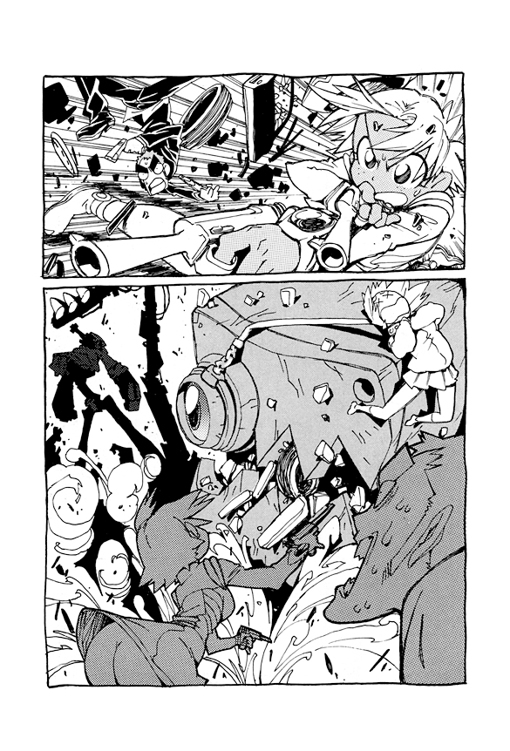
カンチを捕らえたターミナルコアは、それを食うわけではなかった。なにかもっと違うことがはじまっていた。
それは変形というより変質と言うべきだろうか。
ターミナルコアは瞬く間に細かなミリ単位以下のブロックレベルでその結合状態を変化させ、四本脚形態からなにか不安定な炎のようなシルエットになる。
そして、なんと巻き込まれたカンチも、その変化に同調しつつあるようだった。
アマラオは思った。あるいはこのカンチと呼んでいたロボットは、もともとこのターミナルコアのパーツとして作られたのかもしれない。
だがカンチはその変化にいったんは同調しかけたが、再びもとに戻る。そして軋みながら苦しんでいるように見える。それはターミナルコアとの同化に逆らい、現在の自分を必死に維持しようとあがいているのかもしれない。
「やだあ......」
マミ美がさらに喘ぐ。つながれていたマミ美も当然その変化に巻き込まれているのだ。
激しく作動する機械の中、たしかにその体はかなり危険な状況にあった。
アマラオは不気味に蠢くその機械に駆け寄り、手をのばす。マミ美を救うためだ。
キツルバミはその勇気ある行為に少しだけ上官を見直した。
しかし、そのアマラオもターミナルコアに接近しすぎ、結果的には着ているスーツの一部が機械の変形に巻き込まれてしまう。
「しまった！」
「管理官！」
ターミナルコアはいまやタイヤ型に変形していた。直径数メートルの大きな輪の形であり、その各部にカンチ、マミ美の体、そしてアマラオのスーツの一部をくわえこんでいる。
そして、キツルバミはターミナルコアが大きな輪になったその理由を見せつけられる。
なんということだろう。その円形は楕円につぶれて歪んだかと思うと、その反動を利用して大きくジャンプしたのだ。いや、ジャンプというより飛行だ。みるみる上昇して小さくなる。
そのとき、丘の上からサイレンの音が鳴り響いた。ＭＭ工場の警報である。だがそれはこれまでにない激しい大音量で、その音は周辺だけでなく疎瀬市内全域に届いていた。
まるで空襲警報である。
公園のベンチで寝ていたハル子が目を開く。
彼女はその驚異的な視力で、霧の空を飛ぶ機械の姿を追う。そして輪の形をした機械の中にカンチが取り込まれていることをしっかり確認していた。
あわてて飛び起きると、傍らで寝ているナオ太を乱暴に蹴り起こす。
「寝てる場合じゃねえぞ！」
「なに......なに？」
まだ寝ぼけ顔のナオ太に、ハル子は嬉々として告げる。
「クライマックスだ」
４
ターミナルコアはまっすぐにあの〝聳える手〟へと向かって飛んでいく。
そしてそのタイヤ型に変化したボディにはカンチ、マミ美、アマラオを巻き込んでいた。ただし、カンチとマミ美の体は機械が固定しているが、アマラオの方はスーツのすそを挟まれているだけだ。そのためアマラオは機械の一部に必死にしがみついていた。もし振り落とされれば命はない。
地上数百メートルを飛ぶターミナルコア。煙霧に沈む疎瀬市がアマラオの眼下に一望できる。それは恐ろしい光景だった。このままどこかに激突すれば、とうてい無事にはすまない。アマラオの耳にはゴウゴウと激しく風を切る音とともに、マミ美の叫び声も聞こえていた。
「わあああああ......」
それはもちろん悲鳴なのだろうが、なんだかジェットコースターに乗って興奮する子供の声のようにも聞こえた。
ほどなくターミナルコアは降下をはじめる。その目的地である〝聳える手〟の巨大な掌がぐんぐん視界に迫ってくる。このままぶつかれば確実に命はないな、とアマラオは観念する。
「......タッくん、止まれ！」
しかしそのとき悲鳴をあげていたマミ美がいきなり叫んだ。そして彼女は気を失う。
その最後の言葉が通じたのかどうか、とにかくターミナルコアの飛行速度には制動がかかり〝聳える手〟との接触時には列車が連結するほどの速度と衝撃に抑えられていた。
ゴンという衝撃音と共に着床。辛くも命拾いしたアマラオはあわてて挟まれていたスーツを脱ぎ、ターミナルコアから自由になる。
巨大な掌はちょっとした球技場ほどの広さがあった。そのほぼ中心部分に降りたターミナルコアは、自らのボディの一部を掌にコネクトしたらしい。
〝聳える手〟の傍らに建つＭＭ工場がこれまで以上に激しく煙を吐き出し始める。
さらに工場は震動をも始めたようだ。
──ついに動き出すのか......。
〝聳える手〟の上から工場を見て呆然とするアマラオ。巨大な手と巨大なアイロン。まるで自分が小さくなった気分だ。そのとき、彼の携帯電話の着信音が鳴る。受けてみれば、キツルバミの動揺した声が聞こえた。
「プ、プラントが動くんですか？」
上官の安否をまず確認しようとしないあたりがクールではあった。
それはともかく、たしかにターミナルコアとコネクトした以上、いよいよ〝聳える手〟が巨大アイロンを動かすということだ。つまり地球文明を一掃する恐るべき浄化活動の始まりである。
しかし、アマラオは見た。まだその危機が始まってはいないことを。まだ銀河の神々が地球を見捨てていない事実を。
「いや、まだ動かない」とアマラオはクールな部下に教えてやる。「どうやらターミナルコアはうまく接続できないようだ......」
〝聳える手〟の掌にコネクトしたはずのターミナルコアは、しかし不規則な作動音を発し、不安定に軋んでいる。どうやら形態をリング型からコネクト用に変えようとし、その変形がうまくいかなかったらしい。ボディ各部からは不自然に部品が飛び出してはひっこみ、なんだか落ち着きのない様子を見せている。
アマラオはその理由らしきものにもすぐに気付いた。それはどうやら不純物のせいらしい。といってもマミ美のことではない。ショックで気絶したマミ美は、いまだボディに取り込まれてはいるが、不純物は彼女ではなく、むしろカンチの方だった。
コネクトしようとするターミナルコアはそのボディカラーを赤く変色させていた。
しかし、〝カンチの部分〟だけは青色のままなのである。
アマラオはカンチが赤いときにのみあのアトムスク反応を発していたことを思い出す。もしやこのターミナルコアが〝聳える手〟とドッキングするためには、赤いカンチが必要なのではあるまいか。いや、そうに違いない。きっとカンチが赤くないから、ターミナルコアはコネクトができないのだ。
まだ地球が助かるチャンスはある。
震動するＭＭ工場のホストコンピュータには次のような報告が届いていた。
《ターミナルコアはＭＭＲクラス［Ｂ］・ＧＨと接続不可能。07：13。
ＭＭＲクラス［Ｋ］・００１が融合を拒否し、アトムスク反応を示さないため。07：13。
緊急報告、アトムスク化に必要な触媒とみなされる地球人が接近中。ただし......》
アマラオの耳に爆音が聞こえてくる。
それは凶音ともいうべき、他ならぬあのベスパのエンジン音だ。
ほぼ垂直な壁面で切り立つ〝聳える手〟の手首部分をハル子はスクーターでやすやすとのぼってみせた。そして、そのハル子の背にはナオ太がつかまっている。ナオ太はあっけにとられた表情だ。おそらくいまだよく状況を把握していないところを、ハル子に強引につれてこられたのだろう。
やばい、とアマラオは直感する。
これまであのカンチが赤くなるきっかけの多くは、このナオ太という少年を内部に取り込んだことだった。
今この巨大な掌の上には、カンチを赤くできず、身悶えしているターミナルコアがいる。そこにハル子がナオ太をつれてきた。間違いない、ハル子はカンチにナオ太を与えようとしている。なんのために？ もちろんアトムスクを復活させるためにだ。そのためなら地球が危機に陥ることもまったく平気なのだ、このエゴイストは！
アマラオがそう判断したのはハル子という女の過去と目的、その生き方を多少なりとも知っているからである。
ハル子ことハルハ・ラハルの所属する光域宇宙警察フラタニティは、銀河系を二分してＭＭと戦っている。しかしフラタニティは宇宙警察と称しても単なる治安維持の組織ではない。自身の生きる価値を他者の判断に依存しないことを人間性の前提とする一種の思想集団だ。
対するＭＭは遺伝因子などを〝商品〟とする営利追求集団である。銀河には銀河の法があり生命を弄ぶビジネスは厳しく禁止されていたが、ＭＭは非合法な裏取引きや闇の開発実験を繰り返していた。そして帝国主義的な経済による全銀河支配を狙っているが、実は彼らの最終目的はこの宇宙の偏執的な平等化だという。その過程的手段として主に医療ビジネスを展開しているのだ。
ＭＭは一部の選民集団の生命維持のため〝究極のドナー〟となる個体の人体実験を行っていた。だが、その実験体として作られたドナーの少年は自らの意志でＭＭの施設を脱走。少年の名はアトムスク。やがて数年を経て成長した彼は紅の海賊王と呼ばれて恐れられるようになる。ＭＭはなんとしてもこのアトムスクの肉体を必要としていたので、執拗に彼を追いつづけている。
一方、フラタニティはそのアトムスクに何度も協力を要請していた。ＭＭに敵対することで利害の一致するフラタニティは大きな戦力となるアトムスクの身柄をなんとか逮捕という名目で保護し、有利な共闘関係を結びたかったのだ。だが海賊王を名乗る彼はその要請にも耳を貸さず、ひとり孤高の生き方をつらぬいていた。そのため光域宇宙警察はやむなく彼とも敵対関係をつづけている。
フラタニティのナンバーワン捜査官ハルハ・ラハルは、幾度かの戦闘を経て、アトムスクの好敵手であった。そして二人は互いに憎からず思う関係にもなっていた。
やがてとある事件でアトムスクが負傷したおり、ラハルは彼を拘束することに成功する。ついにアトムスクの腕と自分の腕をその手錠でつないだのだ。だがその護送に利用した民間の船にはＭＭの息がかかっていたため、せっかく捕らえたアトムスクの身柄を敵に奪われてしまう。しかも噂ではそのときアトムスクはラハルを救うため、自らが犠牲になったのだという。
結局ラハルに残されたのは左手首の引きちぎられた手錠だけ。
宇宙海賊を捕まえるという光域宇宙警察の任務のため、ＭＭの非合法活動を暴く証拠入手のため、そして自らの激しい恋のために、ハルハ・ラハルことハル子ははるばるこの地球へやってきたのである。
アマラオは銃を手にすると、もはやためらうこともなくベスパのハル子に発砲する。乾いた銃声が数発。とりあえずは接近に対する威嚇である。
──この女は敵勢力が利を得ることになろうと自分の目的のためならどんなことでも実行するやつだ。しかも無駄なことはやらない。彼女がナオ太をここにつれてきたのなら、その目的はアトムスクの復活だ......。
ハル子は舌打ちしてアマラオの銃弾を避けるが、無理なハンドルさばきにベスパは転倒する。投げ出されるハル子とナオ太。だがハル子だけは軽やかに身をひねって着地する。
そのハル子をアマラオはさらに銃で狙っている。動くな、と威嚇しているつもりだ。
不敵に微笑むハル子。
そして二人の間には、腰を打って苦痛を訴えるナオ太の姿があった。
「痛てて......」
そのどこか呑気なナオ太の様子を見てアマラオは苛立つ。しかもその顔が〝すっぴん〟であるのを知ると、思わず怒鳴っていた。
「なぜ〝眉〟をしていない、まだその女に利用されたいのか！」
「............」
ナオ太はなにを叱られているのか理解できないらしく、怪訝な表情をする。
「その女を信用するな。そいつは自分のことしか考えないやつだ。まわりのことはなにも気にしない女だ。けどおまえは違うだろ？ ほら、あの女子高生を見ろ」
アマラオが指さすマミ美の姿を見て、さすがにナオ太も驚いた。ターミナルコアのボディに巻き込まれたマミ美。その全身は金属のベルトに拘束され、まるで茨に捕らわれたお姫様のようでもある。目を閉じているのはどうやら意識を失っているらしい。
「彼女を助けたいだろ」とアマラオは言う。「彼女がこうなったのには、おまえにも責任がある。大人ならわかるだろ。さあこっちへ来い。その女の思い通りになるな」
──とにかく今はこの少年が地球の命運を握っている、こいつをハル子の自由にさせてはならない......。
しかし──なんたることか、ナオ太は腰をさすりながら立ち上がるとハル子の方へと歩きだした。
「やめろ、その女がおまえをどうするつもりか知ってるのか！」
アマラオは慌てる。だめだ、こいつはやはりだめだ、ハル子を自分の味方だと思っている、あの残虐な性格を知らずに手なずけられている、たった今からなにをされるか気付いてないのだ......ガキが！
ハル子はやさしい微笑みで自分に近寄るナオ太の手をそっと握った。
そして、タッくん、とささやく。
「タッくん......あたしが欲しいもののために力をかして」
やさしい微笑みが、その言葉の途中から一転して残忍な笑顔に変わる。
「いただけマンモス！」
不可解な言葉と共にハル子は背中のギターを手にし、それを思い切りよくナオ太の体に叩きつけた。
「わわわ......」
ナオ太の体は車にはねられたように弾き飛ばされる。
ひどい、とアマラオは思う。自分もこれまでハル子には散々な仕打ちを受けてきたが、この蛮行はそのどれよりもひどい。
そして十数メートルを飛んだナオ太の体は、カンチの開いた腹部の穴に正確に飛びこむ。
ナオ太を〝食べた〟カンチはたちまちいつものように赤く変色し──そしてアマラオの予想通りにターミナルコアの一部品として同化していく......。
制御装置である電子頭脳がついに稼働し、〝聳える手〟は震動を始めた。
「なんということを、これじゃＭＭの思うつぼじゃないか......」
アマラオは職務的な理由でハル子を責めるが、感情的にはむしろただ今のナオ太に対する冷酷無情な仕打ちに腹を立てていた。
しかしハル子はけろりとして言う。
「赤いカンチでなきゃ、海賊王アトムスクが出てこないんだよ」
「やつらはそのアトムスクの力を利用してプラントを動かし、この星を破壊する気なんだぞ」
「だから知ったこっちゃねえんだよ。アトムスクさえ手に入ればこんな星のことなんて興味ねえの」
やがて震動だけではなく〝聳える手〟は大きく動き始める。緩慢な動作ではあるが、その巨大な手はいよいよ傍らに建つアイロンの把手部分をつかもうと作動を始めた。
......グオン......グオン......グオン......。
上を向いていた掌がアイロンをつかもうと下向きに翻っていく。
そのため〝掌の側〟に立っていたアマラオはもはやハル子と対決している場合ではなくなった。動く足場の上で振り落とされないよう、しかも必死で〝甲の側〟へ移ろうとする。だがこれはかなり難度の高いクライミングだ。なにしろ対象が動く過程で瞬時にルートを判断し、登攀用具もなく壁面をのりこえねばならない。一歩まちがえれば数十メートルをまっさかさまである。
憎らしいことにハル子は涼しい顔でひょいひょいと巨大な指から指へととびうつっていく。アマラオは悔しげに舌打ちする。
──だからこんな女を信用しちゃいけない......好きになっちゃいけないんだ......。
アマラオはかろうじて甲の側に移れたが、掌がひっくりかえったのは〝聳える手〟がいよいよアイロン型工場を握るということである。そしてこの手が工場の把手部分を握ったら、地球文明の崩壊が始まるのだ。
しかし──把手をつかむ寸前で、どうしたものか〝聳える手〟の動きが急に止まった。すでに掌は把手の位置にまで接近しているのだが、なぜかその指でアイロンを握ろうとはしない。
「......どうしたんだ？」
アマラオは巨大な指のすきまからのぞいてみる。すると、掌と把手の間には、なんとその接合をじゃまする者がいた。そう、その接合部分には眩しく発光する赤いカンチがいたのだ！
どうやらターミナルコアとは同化せず自身を分離させたらしい。そしてカンチは巨大な掌を軽々と持ち上げている。やはりこの赤いロボットは噂の海賊王なのかもしれない。
巨大な指先に立つハル子もそれを見ている。その嬉々とした表情。これほど興奮と喜びに満ちた彼女の顔を、アマラオは初めて目にした。ハル子がずっと手に入れようとして銀河中を駆け巡っていた力。それが今、目の前にあるのだ。彼女はついに本来の獲物をみつけて激しく興奮している。
まちがいない、とアマラオは思う。あの赤いカンチは、いまや紅の海賊王アトムスクそのものなのだ。
けれど──
そのハル子の顔が、ふと怪訝な表情に変わった。
見れば、どうしたことか赤いカンチのボディがみるみる青に戻っていく。と同時に、その見上げたフェイスモニターだけが赤い閃光を発した。
その閃光を合図に、たった今から誰にも予想できなかったことが始まろうとしていた。
どうやら自分はいま夢を見ているらしい、とナオ太は思った。それも現在形で語れる夢、明晰夢を。さきほどハル子に弾きとばされ、自分はカンチの腹の中にいるはずなのだが、目の前には風景が広がっている。なんと雪景色が。その場所はやはり疎瀬市で、あの旧小学校の焼け跡地である。ただし校舎はない。そうか、これは未来の風景なんだ、とナオ太は気付く。数ヵ月先の風景の夢。そして自分の中には、すでにその未来時間の記憶もあることを知り驚く。だから焼け跡の校舎がない理由もナオ太は知っていた。
この冬──といっても夢の中での記憶の冬だが──疎瀬市には観測史上はじめてという大雪が降った。その重みであの焼けた校舎はさらに傾き、子供が遊び場にすると危険だというので早々に取り壊されたのだ。ニナモリ市長は市民の声に迅速に対応したのである。
幾度か太陽がめぐり、周囲の風景が春に変化する。夢の中での時間の流れは任意に不規則らしい。ナオ太はすでに中学生になっている自分に気付く。中学の放課後の教室で、まわりにはマサシ、ガク、ニナモリがいた。みな同じ学校に進んだのだ。
「ナオ太もバスケ部に来いよ」とマサシが言う。
しかしナオ太はすぐに答えず、考えを整理するように中学生の意識と記憶でこれまでのことを思い返した。
中学校の窓からも見えるあの丘の上に建つＭＭ疎瀬工場はずっと閉鎖したままだ。公式には事故のため再開のめどがたたないと発表されている。巨大なアイロンは今も街を見下ろし鎮座しているが、もうあの白い煙が吐き出されることはない。工場は死んだのだ。ただ、そのために失業した市民も大勢いた。そして職を求めて都会へ出稼ぎにいく者が増えた。
その流れにのるようにマミ美もまた高校をやめて上京した。
中学になって通学路が変わったが、ナオ太はたまに疎瀬橋を通ると、そのときばかりはさすがにあのマミ美と過ごした日々を思い出したりする。
マミ美はカメラマンになると言って街を出ていった。たまたま投稿した写真が雑誌で賞をとり、それがきっかけで決意、というか思いついたらしい。ちなみに雑誌に掲載されたその写真とは、ナオ太がハル子のベスパに撥ねられたときのあの決定的瞬間を写したものだった。そしてその掲載写真にはタイトルがつけられていた。『さよならナオ太君』と。思えば、マミ美がナオ太の本名を使った、それが最初で最後のことだった。
家はあいかわらずだった。
カモンはパン屋を営みながらもまだ懲りずに売れないミニコミ誌を作っている。
そしてカンチもずっとナンダバ家にいて、いまだにカモンにこき使われたり、あるいは適当にさぼったりしていた。しかしそのボディカラーはもうずっと青色のままで、以前のように赤く変化することは二度となかった。
一方、飼い猫のミユミユについては謎が深まっていた。ナオ太は今では、もしかしたら〝彼女〟がいつも話していたあの謎の声は、実はこのミユミユだったのではないかと疑っていた。なぜならその後、カモンがあの謎の声と話しているのを偶然立ち聞きしてしまったのだ。そのとき、部屋にはやはりカモンとミユミユしかいなかったのである。
しかも、そのとき立ち聞きした内容は驚くべきものだった。実は行方不明だときかされていたナオ太の母親は、なんとあの〝彼女〟の同僚であるらしいのだ。つまりナントカ宇宙警察とやらの一員ということだ。だがナオ太は立ち聞きしたことは秘密にし、それ以上詳しいことはカモンに訊かなかった。なぜなら、父親がナオ太に隠していることはすなわちナオ太のために隠してくれているのだと、今ではなんとなくわかっているからだ。
兄タスクはナオ太が小学校を卒業する前に一度日本に帰ってきた。婚約者を紹介するためだ。そして金髪の彼女を家族に紹介すると、再びアメリカに戻った。向こうでプロ選手になるらしい。それもＭＭがオーナーのチームである。でも、まあそれはそれでいい、とナオ太は思ったものだ。
シゲクニは野球の監督をつづけている。けれどナオ太はもう疎瀬マーシャンズの、あの兄のおさがりのユニフォームを着ることはなかった。
ナオ太は、今ではもう出歩くときにあの兄譲りのバットを持ち歩いたりはしていなかった。野球はもういい。自分にはむいていない。というより、他にやりたいことがあるのだ。
「一緒にバスケやろうぜ」とガクも言う。
中学に入って部活をしていないナオ太に、マサシとガクは自分たちの入っているバスケ部をすすめてくれる。けれど──
「いや、バスケはやめとくよ」とナオ太は断る。「やりたいクラブは自分でつくるつもりだから」
驚いたことに、その会話を傍らで耳にしていたニナモリはナオ太のやりたいクラブをずばり言い当てた。軽音でしょ、と。女って深いなあ、とナオ太は思う。
その通り。ナオ太はバンドをつくるつもりだった。
ナオ太の部屋には、今も〝彼女〟の残したギターが壁にたてかけられている。それはナオ太に使われるときを待っているのだ。〝彼女〟はそれだけを残し、いなくなってしまった。この街から。この星から──。
そのとき教室の頭上に眩い光が現れた。赤い光だ。その赤い光源はそしてナオ太に語りかけてくる。
君はこれで良かったのか？
その男性の声は初めて耳にするものだが、ナオ太は不思議になつかしく感じた。これまで何度もその声を聞いたことがあるような気がした。そしてナオ太はなぜかその赤い光源を怪しく思うこともなく、素直に声の問いに答える。
うん、これで良かった、と。
僕の選んだ、これが現実だ。他の選択肢を選べば他の現実になったろうが、僕は結局これしか選びようがなかった。これを選んだから僕なんだ。
頭上の光源が笑ったような気がした。そして次の瞬間、光源はさらに眩しく閃光を発する。気がつけばその赤い光源はナオ太に接近し、その体を包んでいく──。
同時に未来の記憶は消失し、ナオ太の時間は再びカンチの中に取り込まれた瞬間へと引き戻された。
輝くカンチのフェイスモニター。その赤い閃光の中からなにかが迫り出してきた。
アマラオは再びあのギター型超兵器が出てくるのかと思ったが──それはなんと子供の体だった。ナオ太である。
それも全身から赤いオーラのような輝きを放つ〝紅のナオ太〟だった。
紅のナオ太はまるで山がのしかかってくるような巨大な質量の掌を思い切り蹴りあげる。するとその一撃で──本当にたったその一撃だけで──〝聳える手〟はその全体が弾きとばされた。信じがたい光景だ。
そして蹴り飛ばした紅のナオ太は、カンチの頭に悠然と構えて立っている。
さきほどとは逆方向に翻って動く〝聳える手〟の一部に必死でつかまりつつも、アマラオはそんなナオ太の姿を見て呆然とつぶやく。
「あのガキ......海賊化したのか！」
紅のナオ太は足もとにあるカンチの頭から次々と二本のギターを引き抜く。そしてその両手のギターを頭上で交差させると、それは融合し、ダブルネックのギターとなった。
ナオ太はカンチの頭を蹴り、飛んだ。もはや彼は自由に飛行できるらしい。
そして手にしたギターを先ほど自分が蹴り飛ばしてひっくりかえっていく敵のボディに叩きつける。
眩い閃光。その瞬間に〝聳える手〟の動きは止まった。まるで凍りついたようにぴたりと停止する。
それは戦いですらなかった。ただ大人が幼児を叱るような有無を言わさぬ圧倒的な一撃である。
そしてダブルネックの一撃を放った紅のナオ太の額にはひときわ赤く輝く〝紋章〟が印されていた。海賊王の紋章だ。どうやらナオ太にはいまあの海賊王の力が宿っているらしい。
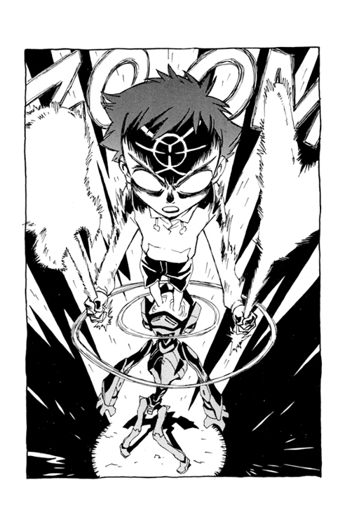
そんな紅のナオ太を見ていたハル子は、冷たい表情の内に凄まじい怒りを秘めていた。そして押し殺した声で言う。
「タッくん、それはダメだ。その力はあたしのだ」
〝聳える手〟の指先に降り立つ紅のナオ太に、ハル子は手にしたギターで猛然と殴りかかる。だがナオ太はその攻撃を自分のギターで軽々と受けとめた。
見ていたアマラオは驚く。と同時に、これはチャンスだと思った。
あのナオ太はついさっきハル子に裏切られ、手酷いめにあったばかりだ。彼女の仕打ちに激しい怒りを感じている。そして、そんなナオ太にどういうわけかあの海賊王の力が宿っている。巨大ＭＭロボはうまいぐあいに破壊してくれたようだし、このままハル子を撃退すれば地球は安泰ということだ。そう、これは絶好のチャンスだ。地球外のやつらを一挙に排除するチャンスである。
「あたしの欲しいものを邪魔するやつは許さん！」
停止した〝聳える手〟の指先上でハル子と紅のナオ太の激しいギターの鍔競り合いが続く。その凄まじいエネルギーの衝突に青白いスパークが閃く。
ハル子はついに勝負に出てギターを大きく振り上げるが、しかし紅のナオ太はその彼女の動きよりも素早い電光の一撃を炸裂させた。
激しい金属音と同時にハル子のギターは空高く弾き飛ばされてしまう。
──勝った！
見ていたアマラオは心の中で快哉を叫んだ。よくやったぞ少年、おまえは地球の英雄だ、さあとどめの一撃だ、その自分勝手な女におまえの怒りを思い知らせてやれ！
だがアマラオは次の瞬間には恐怖のあまりその場に立ちすくんでいた。
武器を奪われたハル子は凄まじい怒りの表情で紅のナオ太を睨んでいる。そして彼女のそのあまりに強い情念は自身の意識内を飽和してあふれ、思念波となって周囲に広がったのだ。目前で対峙するナオ太はもちろん、その強力な思念はアマラオにも届き、また意識を失っていたマミ美をも目覚めさせた。それははっきりと感じ取れる怒りの思念だった。
〝なんてこった、おまえにやられるとはね、それもあたしがあれほど欲しかった力を手にし、まさにその力であたしを撃つとはね、まあこうなっちゃしょうがない、あんたを利用したあげくに裏切ったんだから、でもね、後悔なんてしてないよ、あたしは自分がやってきたことの非情さがどんなものかすべて知っている、知った上でやっている、でもだから許されるとも思わない、そもそも誰もあたしを許す権利などない、そして罰する権利もない、自分の価値を創造するのがあたしたちフラタニティの生き方だ、そこがあの気持ち悪いＭＭどもとは違うところさ、やつらもあたしもやってることは結局〝悪事〟だ、けれどやつらはその悪事に理由と言い訳を用意している、やつらの行動の動機は他者の許しを乞う自身の脆弱な精神であったり他者との比較によってしか満足できない価値観だったりその裏返しの病的な強迫的平等意識だったりするんだ、さあタッくん、やるがいい、あんたも小さな正義の名のもとに、その超兵器をあたしに向かって揮うがいい......〟
「やれ」と思わずアマラオは叫んでいた。叫ばなければ、彼女のその強烈な思念波に耐えられなかったのだ。アマラオはいま神の怒りにふれた古人の恐怖に包まれ、それに負けないようさらに自身を鼓舞して叫ぶ。
「その女もＭＭと変わらない、この星には危険すぎる......思いしらせてやれ！」
紅のナオ太はハル子の目をまっすぐに見据えて、その手にしたダブルネックのギターを構える。緊張の数秒が流れる。
しかし──。
そのとき、ナオ太の体を包む赤いオーラがいきなり消失した。
さらに額の紋章も消え、いつもの姿にもどる。
そしてもとの姿にもどったナオ太は、せっかく手にしたその海賊王のギターをハル子に差し出してみせた。
なにをやってるんだ、とアマラオはわが目を疑う。
──信じられない、ナンダバ・ナオ太よ、おまえは地球を裏切るのか、せっかく地球の危機を回避できるこのチャンスをなぜ自ら捨てる、いや、それどころか、ついさっきおまえを裏切ったその女になぜ報復しない、せっかくの切り札を手渡すのはどういう理由からだ？
思わず差し出されたギターを受け取りつつ、そしてさすがのハル子もこれには面食らったようだ。その証拠に今まで周囲に満ちていた思念波がすっかり消失している。あきらかにナオ太は自分の意志で海賊化を解いたのだ。でもどうして？ 相手の真意をつかめず、ハル子は当惑の表情でナオ太を見る。
赤いオーラ光を失ったナオ太の頰が、しかし別の理由で赤く染まっていく。
そしてこの一週間、いやもっと以前からハル子に言おうと思っていた簡潔な言葉をようやく彼は口にした。
「......好き」
そして戸惑うハル子に、少年はキスをする。
もちろんマウス・ツウ・マウスである。
しかもかなり濃厚に。躊躇なく。延々と。
二人の目撃者がそれを見ていた。
ひとりは啞然とするアマラオ。
もうひとりは、いまだターミナルコアにその体を囚われたまま、さきほど意識がもどったマミ美である。マミ美はその二人の口づけを冷めた目でじっと見つめていた。
そして──。
どれほどの時間が経過しただろう。
やがてハル子の唇からナオ太が離れたその瞬間──ついにそれは出現した。
それはナオ太の頭部から飛び出した。
いつものように角のような突起物が出たかと思うと、それはたちまち大きくなり、ナオ太の頭を離れて天高く上昇する。
それは鳥頭有翼の大男だった。逞しい腕と胸、鍛えられた全身の筋肉。その大きな黒い翼は広げているだけで重力を自由に操れるらしく、好きに空間に浮かんでいる。そして、その右手首にはブレスレットをはめていた。それはハル子の左手のものと一対になるあの鎖のついた腕輪、〝ちぎれた手錠〟である。
その鳥人の姿を目にするとハル子は狂喜して叫んでいた。
「アトムスク！」
それは偶然かもしれない。しかしハル子のその一言で、まるで一発の銃声で雪崩が誘因されるかのように一同の足場である〝聳える手〟、つまり巨大ＭＭロボットが瓦解しはじめた。各部が崩壊しつつ、その不安定で巨大な形を支え切れずに全体が倒壊を始める。
それは悪夢のような光景だった。そこにはりついた人間はもちろん、その巨体が倒壊すれば付近にも大規模で悲惨な被害がでるだろう。なにしろ高層ビルより高い金属塊が、まるで切り倒された大木のように住宅地に落下していくのだ。
だが、なんということだろう。
その巨大な質量の残骸は、倒壊の途中で静止し、ふわりと宙に浮いた。そして目に見えない神の手につかまれたように、ゆっくりと上昇していく。
海を割る力と比べて遜色のないその奇跡を起こしているのはもちろんアトムスクだった。
いつのまにか空中に浮かぶアトムスクの頭が局地的な台風の目となり巨大な竜巻を発生させている。そして凄まじい吸引力を発揮し、〝聳える手〟を吸い込みはじめたのだ。
いや、単に吸い込むだけではなく、アトムスクはそれら吸引力や竜巻を自由に操ってもいた。
「Ｎ・Ｏか......」
そうつぶやくアマラオもいまや宙に浮いている。その巨大な渦巻く大気に巻き込まれて飛んでいる。しかしアマラオの体は〝聳える手〟とは反対に、ゆっくりと地面に降下していく。どうやらアトムスクは吸い込むものと残すものをきちんと選別しているらしい。その力は圧倒的でありながらしかも理性的であるようだった。ただ眉シールだけがアマラオの顔から剝がれて飛んでいった。
まわる、まわる、回る......。
いまや疎瀬の空は巨大なミキサーのように大気が回転し、渦巻いている。
色づいた街中の黄色いイチョウの葉が枝から吹き飛ばされ、さながら蝶の大群が舞っているかのように乱舞する。結局最後まで街にとどまった一般市民の多くは頭上に展開するこのスペシャルページェントを目にしていた。その光景こそが危険を知らされずにこの場にとどめおかれた彼らの唯一の代償である。
マワル、マワル、廻る......。
ようやく機械の縛めから自由になったマミ美、青色に戻ったカンチ、眉毛シールの剝がれたアマラオ、そして海賊化を解いたナオ太は、それぞれが怪我をすることもなくその渦巻く大気に運ばれ、安全な場所へと降ろされる。渦は単なる渦ではなく、その細部までも完璧に制御されたアトムスクのエナジイなのだ。すごい力だ。けれどほんの一瞬とはいえ彼と接触したナオ太には、それは少しも不思議なことではなかった。あの赤い光の持ち主は確かにそんなすごい男に思えた。
その渦はやがてすべてアトムスクの頭の中に吸収され、消えた。どうやらあの巨大ＭＭロボの残骸だけかけらも残さず吸い込んだらしい。いや、それと煙だ。あの鬱陶しく白濁した煙も一掃され、疎瀬の空はいま久しぶりに眩い太陽と澄んだ青を取り戻している。
そして黒い翼の海賊王はＮ・Ｏを閉じると、出現したときと同様、電光の速度で空の彼方へ飛び去っていた。
雲ひとつない鮮やかなスカイブルーの中に黄色いベスパが浮かんでいる。
もちろん、そのシートには彼女が──ハル子がまたがっていた。
あわてて口笛で自分のスクーターを呼んだとき、しかしすでにこの疎瀬の空に、彼女が追うアトムスクの姿はなかった。
空中浮遊するベスパの上で、ハル子は自分の左腕のブレスレットを見ていた。その金属ベルトの一部についた短い鎖が、虚空の彼方をさしている。それはおそらくあのアトムスクが飛び去った方向を示しているのだろう。
今、なだらかな丘陵に佇むナオ太は、そんなハル子をじっと見上げていた。
ただ一心に見つめていた。
黄色い宇宙スクーターに乗る暴走女。ハレンチな女として最初はあれほど嫌っていた家政婦。幾度となくナオ太をギターで殴り、ベスパで撥ね、馬鹿にして利用してきたやつ。自分勝手でわがままで横暴でデタラメで非常識で、そしてナオ太が初めて想いを告白した相手。
ハル子はしばらく未練からブレスレットのさす空を見ていたが、やがて、しょうがないな、というなかばあきらめの笑みを浮かべて、ナオ太を見下ろす。
「タッくんのせいで、またあいつを見失っちゃったじゃないか」
しかしそう言うハル子の口調は、なんだか妙にやさしかった。そしてそんなやさしさが自分でもおかしいらしく、小さく微笑んでいる。
見つめ合う二人。イチョウの葉が舞って落ちてくる。
やがてハル子が軽い口調で問う。
「一緒に行く？」
「............」
ナオ太は心の中でつぶやく。
どうせ、つれてく気なんかないくせに......。
「ダメね」とハル子は言う。「タッくんはまだ子供だから」
そしてメットのゴーグルをおろすと、アクセルを全開にする。激しい爆音とともにベスパはみるみる加速して青空に小さくなり、やがて消えた。
しばらくしてからナオ太は近くに落ちているベースギターに気付いた。ハル子のものだ。
拾ってその弦を弾いてみると、切ない音が辺りに響く。
特別なシーズンの終わりを告げる音。
それがナオ太とハル子の別れだった。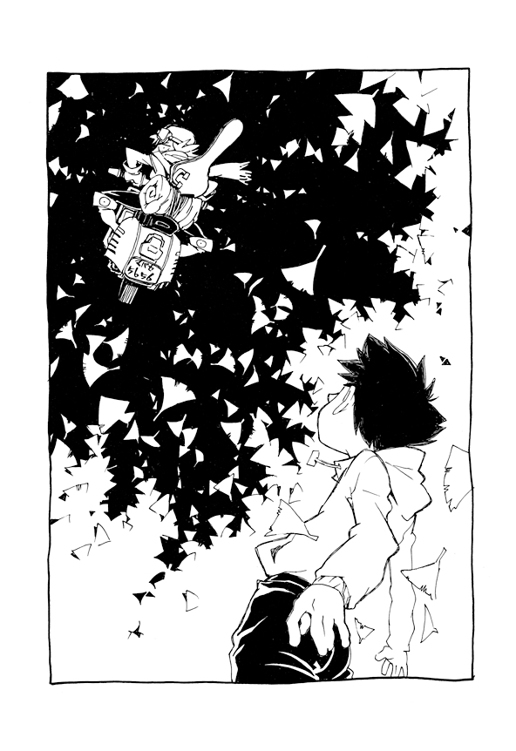
あとがき
シリーズ全体の中で僕がもっとも気に入ってるシーンは、第一話でナオ太がマミ美に会うために夜の街を走るところです。あと二人が川原で遊んでいたあの空気もけっこう好きです。
けれど、そうした自分の好みを考えると、そうか、僕はもう大人なんだなあ、とか思います。
なぜなら、切なさに娯楽性を感じてしまっているからです。
本来、というか、もっと若い頃には、切なさとはただマイナスの感情でしかありませんでした。なのにそんな想いも今は遠い記憶の彼方にあり、ふりかえって描いた少年時代は、どうしても本当のあの頃とは少し異なってしまうようです。年齢を重ねるとその価値観は変わっていくもの。そう、職業柄とはいえマイナスの感情、ネガティブな気持ちの有効利用まで考えるようになっては、これはもう大人でしかないでしょう。
ただそれでも、大人になっても、僕たちはやはり〝限定された存在〟であることからは逃れられませんが。
人は失った分だけ何かを手にし、また手に入れた分だけ何かを失う。
僕は以前からこの言葉を最初に思いついた人間はすごいと思っていました。
たとえば、大切な宝物を失うと、代わりに〝宝物を失った喪失感〟が手に入ります。
あるいは長年の夢を実現するときには代わりに〝実現しようとする情熱〟を失ったりします。
このように失うことは得ることであり、また得ることは必ず何かを失うことです。
ただのレトリックに過ぎないと思われるかもしれませんが〝価値〟というものが客観的な神の視点で存在するなら、これはすごく単純で、そしてまた奥深い真理でしょう。
しかし、実際にはこのテーゼはかなり非現実的なものです。
なぜなら、神の視点を生きる人間など現実にはいないからです。人には必ずその人独自の目的というものがあるので、失うものと得るものは等価ではなく、だからこそ需要と供給という関係が常に存在しているわけです。
卑俗な例で恐縮ですが、トレーディングカードを集めている人にとって、ダブったカードと持ってないカードではその価値は違います。神の視点から見れば対等な価値でしかないカードが、限定された状況にいる人間にしてみるとそうではなくなる。カード自体の本来の価値は同じでも、そのコレクターの現在の蒐集状況が個々のカードの特定の価値を生むわけです。
目的を持つ者にとっては特定のものにだけ価値が生じる。
つまり現実においては、やはり人は大切な何ものかを失うし、またその逆に〝丸儲け〟的な幸運をつかんだりもするのです。
けれど、だからこそ、失った分だけ必ず何かを手に入れる、という言葉は逆に鋭く意味を持ちます。それは神の視点というコンセプトを知ることにより、目的や価値は絶対的なものではなく〝ある程度は変更可能なもの〟であることを教えられるからです。そのことは大きな挫折をしたときなどに、あるいは救いの力になるかもしれません。
そう、目的を変更すれば、その人を取り巻く森羅万象、有象無象すべての価値もまた変化します。トレカの蒐集そのものに興味をなくせば昨日までの宝物がただの紙屑に変わってしまうように。
なんだか経済学の効用価値説みたくなってきましたが、けれどこのことはハルハラ・ハル子というヒロイン（？）を僕なりに解釈する上でかなり大事な要素でした。
御存知の通り、この本はアニメのシナリオを小説化したものです。物語は基本的に鶴巻監督との共同作業で構成しました。あとＧＡＩＮＡＸの皆さんのアイデアも随所に入っております。
キャラデザインの貞本義行氏、作監の平松禎史氏、小説版のイラストも描いてくれた今石洋之氏、芳垣祐介氏、編集の山崎貴博氏、プロデューサーの佐藤裕紀氏、他スタッフの皆さん、そしてファンレターを寄せてくださった方々や、今これを読んでいるあなたに感謝を捧げます。
大人になって〝子供であること〟を失い、それでもまだ〝限定された存在〟である僕たち。
でもだからこそ限定された存在であることに胸を張りたいとも思います。
限定された存在であることはけして本当の豊かさを手にすることの障害ではない。
貪欲な意志と何者にも支配されないあの自由なハル子の目が示してくれたのは、逆にそのことのような気がするのです。だって彼女ですら、やはり限定された存在でしかないのにそれでも暴走人生を送っているのですから。
「ときにはまずいラーメン食ってみたりするのも人生の豊かさってやつ」
そう言って笑うことができるのは、なんだかカッコイイ大人のように思えるのです。
心豊かな新世紀となりますように──。
２０００年12月14日
榎戸 洋司
フリクリ
榎戸洋司
企画・原作/GAINAX
角川スニーカー文庫
平成22年8月1日 発行
発行者 井上伸一郎
発行所 株式会社角川書店
〒102-8078 東京都千代田区富士見2-13-3
http://www.kadokawa.co.jp/
(C)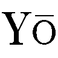ji ENOKIDO 2010 (C) 1999 GAINAX